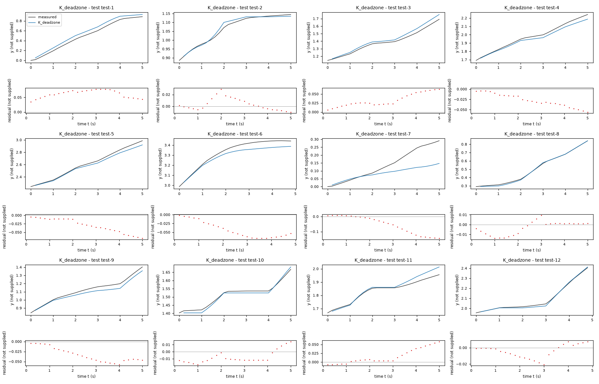
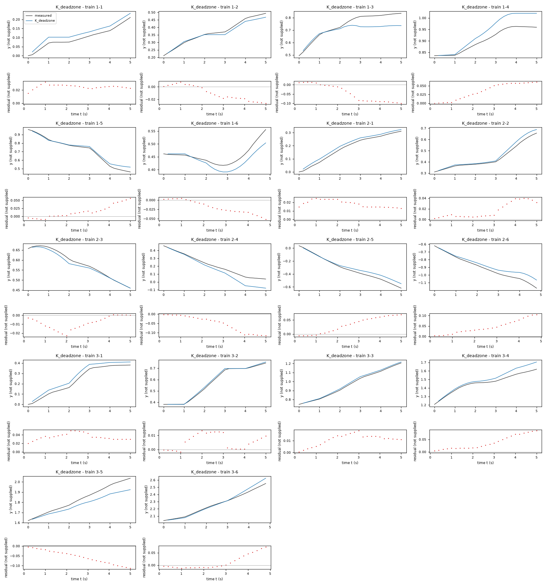
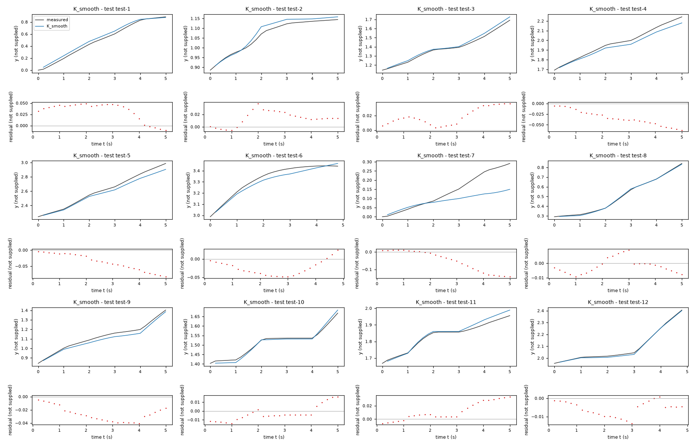
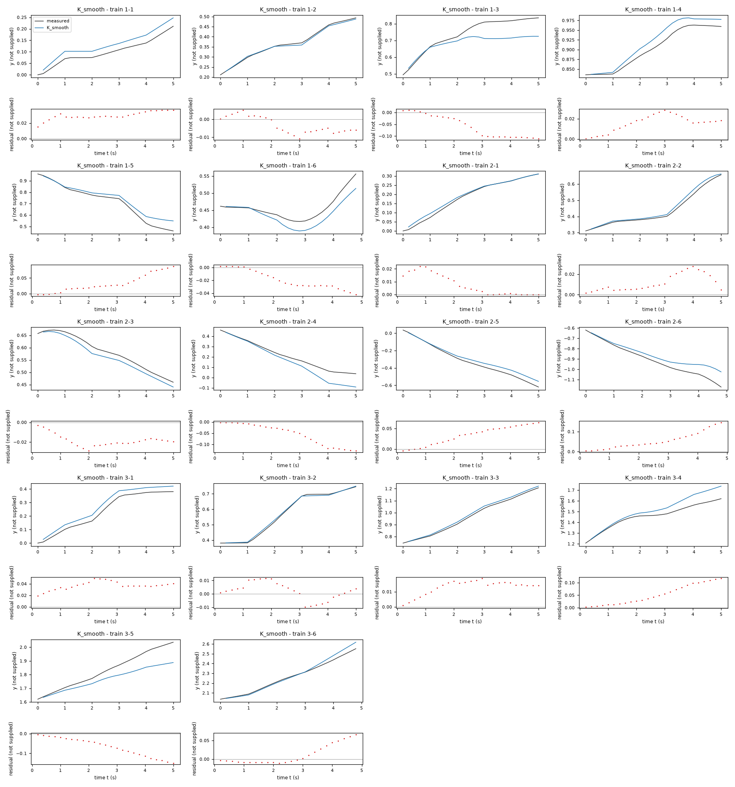
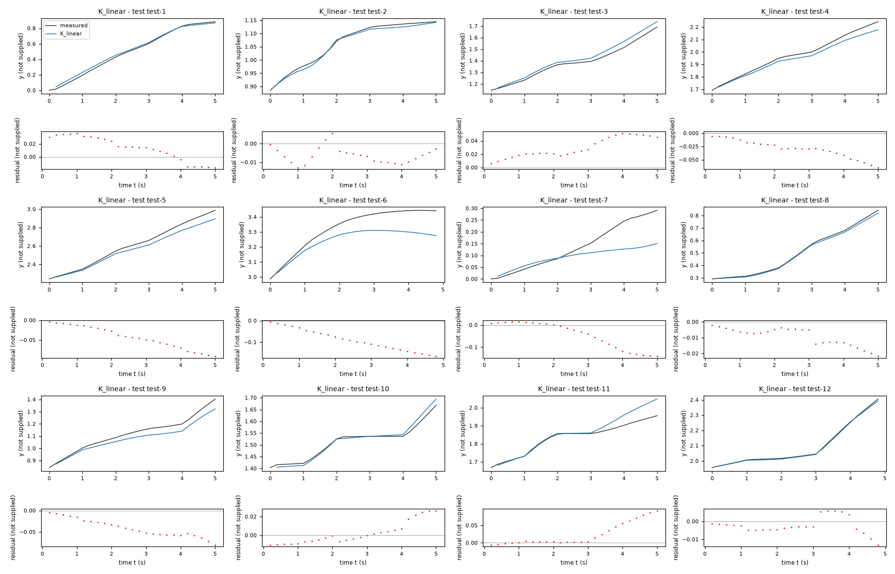
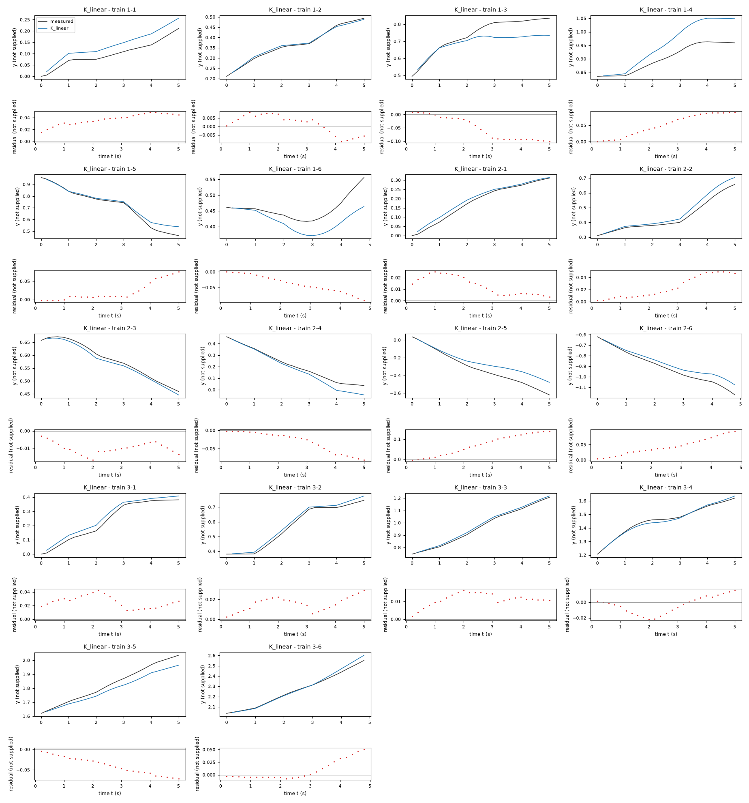

Identification task kt5o – run 2 of 5
Generated: 2026-10-08 00:00 UTC
Finished by the agent after 31 turns, 386 s of execution time and 1.16 USD. 3 models delivered, 3 evaluated.
1 Models
| Model | Fitted parameters | Training error of y | Test error of y | |
|---|---|---|---|---|
| K_deadzone | 5 | 0.03849 | 0.0394 | recommended by the agent |
| K_smooth | 4 | 0.04374 | 0.03394 | lowest test error |
| K_linear | 4 | 0.04064 | 0.04566 |
The models are listed in the agent's order. Errors: root mean squared error between simulated and measured y. Training data: 18 segments of 25 to 26 samples (447 scored samples); the harness cuts the training trajectories into segments of at most 25 simulated samples, the length of the test trajectories, so that the two errors are comparable. Test data, which the agent cannot access: 12 trajectories of 25 to 26 samples (298 scored samples). The agent recommends a model from the training data. The model with the lowest test error is found with the test data, in hindsight, among the 3 models of this run; the agent could not make this choice.
y rollout RMSE among retained candidates: approximately 0.116 in unknown y units, compared with 0.122 for the smooth monotone family and 0.216 for the affine-input kinematic reference. All use only training data. The smooth family is competitive and has lower full-training error, so the recommendation is provisional given only three experiments. The threshold candidate also avoids local command-response reversal and prevents negative displacement length at small positive x3. Residuals still show unresolved input-change transients.speedoffset = -0.001713 unknown position unit per sample (fitted), speedgain = 0.18 unknown position unit per x3 unit per sample (fitted), turngain = 0.195 inferred radian per x4 unit per sample (fitted), turnbias = 0.001947 inferred radian per sample (fitted), threshold = 0.1184 unknown x4 input unit (fitted)y: 0.03849 · test error: 0.0394Equations as written in the model file
y_next = y+(Max(0, speedoffset+speedgain*x3))*cos(x2+(turngain*sign(x4)*Max(0, Abs(x4)-threshold)+turnbias)/2)
x1_next = x1+(Max(0, speedoffset+speedgain*x3))*sin(x2+(turngain*sign(x4)*Max(0, Abs(x4)-threshold)+turnbias)/2)
x2_next = atan2(sin(x2+(turngain*sign(x4)*Max(0, Abs(x4)-threshold)+turnbias)), cos(x2+(turngain*sign(x4)*Max(0, Abs(x4)-threshold)+turnbias)))
Equations with the values substituted
Every parameter is replaced by its value with 4 significant digits.
Parameters and estimation
| Name | Value | Unit | Type | Description |
|---|---|---|---|---|
speedoffset | -0.00171285 | unknown position unit per sample | fitted | Offset of per-sample displacement length, estimated jointly with all other fitted parameters from full training rollouts. |
speedgain | 0.18003 | unknown position unit per x3 unit per sample | fitted | Multiplier of the current x3 input in displacement length, estimated jointly with all other fitted parameters from full training rollouts. |
turngain | 0.195025 | inferred radian per x4 unit per sample | fitted | Multiplier of the model-specific x4 input response in angular increment, estimated jointly with all other fitted parameters from full training rollouts. |
turnbias | 0.00194651 | inferred radian per sample | fitted | Constant per-sample angular increment, estimated jointly with all other fitted parameters from full training rollouts; its mechanism is unknown. |
threshold | 0.11838 | unknown x4 input unit | fitted | Half-width of the exact dead zone in x4 input units, estimated jointly with all other fitted parameters from full training rollouts. |
- Criterion minimized
Weighted output-error nonlinear least squares over complete free-running training trajectories: sum of squared errors in
yandx1plus0.09times squared errors in unwrappedx2. No measured states are reinserted after the first sample. Position units are unreported;x2is computationally interpreted in radians. The dimensionless angular residual weight is0.3. It was selected from0.3,1, and3by leave-one-trajectory-outyrollout error, to emphasize coordinate accuracy while preserving heading consistency.- Data
data/train.csv, all three trajectories and all 150 samples per trajectory. There are 149 within-trajectory transitions per experiment, 447 transitions in total. No transitions cross trajectory boundaries. Initial states are the first logged states. Only the angular observations were unwrapped using numpy.unwrap to avoid artificial branch-cut residuals; position observations and inputs were not filtered. All rows were used in the final fit because no quality labels justify deleting them.
- Method
All fitted parameters were estimated together in one step by nonlinear least squares, scipy.optimize.least_squares with , two-point finite-difference Jacobian and ordinary quadratic loss. This method permits the nonlinear trigonometric rollout criterion and bounds; linear least squares cannot fit that criterion. Starting values were (same implied units as the coefficient), (same implied units as the coefficient), (same implied units as the coefficient), (same implied units as the coefficient), (same implied units as the coefficient). They approximate the exploratory linear input gains with a small or zero bias; attenuation was initialized moderately within the input range rather than at a singular zero scale. The bound in unknown
x4input units was chosen to allow a moderate dead zone within observed commands without eliminating almost all commands; other parameters are unbounded. Termination tolerances were , , and ; maximum function evaluations were1500(dimensionless algorithm settings). No random numbers or seeds were used. Fits were also repeated on each pair of trajectories for validation and on the first90samples per trajectory for temporal forecasts, but submitted coefficients use all samples. Method reference checked: SciPy least_squares documentation, Trust Region Reflective method; SciPy source optimize/_lsq/trf.py. The installed SciPy version was 1.18.1.- Script
fit_candidates.py
The agent's explanation
Nonsmooth discrete-time planar kinematics with static dead-zone input nonlinearity (a Hammerstein-type input map followed by geometric integration). The planar geometric part is the unicycle/differential-drive kinematic model discretized with midpoint heading; reference checked: Frank Dellaert and Seth Hutchinson, Introduction to Robotics and Perception, section 5.2, Motion Model for the Differential Drive Robot (roboticsbook.org). This is an analogy for the data, not an assertion of the unknown system identity.
y and x1 are treated as two accumulated coordinates; x2 sets the direction. x3 and x4 are the current inputs. speedoffset is the fitted offset in distance per sample, speedgain scales x3, and truncates negative displacement lengths to zero. turngain scales the excess input magnitude beyond threshold; is zero inside the threshold interval and odd outside. turnbias is a constant angular increment. The cos and sin terms project displacement along the midpoint direction. The atan2(sin(...), cos(...)) term wraps the accumulated direction onto the principal-angle interval. All terms have mathematical meanings; mechanical causes of attenuation or bias are not known.
After the affine and degree-two/three polynomial maps showed poor or unstable held-out rollouts, a trigonometric planar structure was inferred from motion directions and angle wrapping. Linear and bilinear turning laws were tried, followed by cubic, saturating tanh, and subtractive tanh dictionaries. Larger inferred gain for large inputs motivated a guessed dead-zone nonlinearity, not a known mechanical friction law. The retained turning expression is nonsmooth and monotone. The speed expression was chosen to prevent the fitted offset from producing reverse motion at small positive commands. No genetic symbolic regression or sparse-thresholding package was used. Structure selection was manual dictionary comparison guided by rollouts and residuals.
The physical system, column units and intended use are unknown. Interpreting x2 as an angle in radians is inferred from wrapping near and pi, not supplied metadata. Coefficients map one sample to the next; the supplied sampling period s is already absorbed in them. The models assume translation invariance: absolute y and x1 do not change the increments. This is supported by the observed direction of motion but not established globally. Only three experiments are available; leave-one-trajectory-out validation is noisy, and hyperparameter selection used these same experiments, so its results are not an unbiased test score. No test data were accessed. Input-change residuals and their positive lag-one correlations indicate missing transient dynamics, disturbances, or both. The prescribed three-state model has no actuator or previous-input state, so that behavior is not fully represented. Long-horizon accuracy outside the observed input/state support is unknown; no global state bound is guaranteed for accumulated positions. The exact threshold and speed cutoff are empirical approximations; a threshold crossing is continuous but has a derivative discontinuity. Input-change residual RMS on all training transitions was about 0.00545 for y, 0.00503 for x1 in unknown position units, and 0.0891 in inferred radians for x2; non-switch RMS was approximately 0.00165, 0.00150, and 0.0201 in the corresponding units. The angular residual still correlates with current x4, especially during changes; the static threshold does not remove lag.
Plots of simulated and measured y, and errors per trajectory


| Data | Trajectory | Scored samples | RMSE | NRMSE | R² | Failure |
|---|---|---|---|---|---|---|
| training data | 1-1 | 25 of 25 | 0.02532 | 0.4969 | 0.7531 | none |
| training data | 1-2 | 25 of 25 | 0.01495 | 0.1942 | 0.9623 | none |
| training data | 1-3 | 25 of 25 | 0.06271 | 0.692 | 0.5211 | none |
| training data | 1-4 | 25 of 25 | 0.04144 | 0.8326 | 0.3068 | none |
| training data | 1-5 | 25 of 25 | 0.02448 | 0.1641 | 0.9731 | none |
| training data | 1-6 | 24 of 24 | 0.02558 | 0.705 | 0.5029 | none |
| training data | 2-1 | 25 of 25 | 0.01897 | 0.2007 | 0.9597 | none |
| training data | 2-2 | 25 of 25 | 0.02187 | 0.2133 | 0.9545 | none |
| training data | 2-3 | 25 of 25 | 0.01098 | 0.16 | 0.9744 | none |
| training data | 2-4 | 25 of 25 | 0.06609 | 0.5122 | 0.7376 | none |
| training data | 2-5 | 25 of 25 | 0.0426 | 0.2389 | 0.9429 | none |
| training data | 2-6 | 24 of 24 | 0.05507 | 0.3808 | 0.855 | none |
| training data | 3-1 | 25 of 25 | 0.03632 | 0.2799 | 0.9217 | none |
| training data | 3-2 | 25 of 25 | 0.007681 | 0.05599 | 0.9969 | none |
| training data | 3-3 | 25 of 25 | 0.01197 | 0.08301 | 0.9931 | none |
| training data | 3-4 | 25 of 25 | 0.04609 | 0.4609 | 0.7876 | none |
| training data | 3-5 | 25 of 25 | 0.06454 | 0.5203 | 0.7292 | none |
| training data | 3-6 | 24 of 24 | 0.03019 | 0.1943 | 0.9622 | none |
| test data | test-1 | 25 of 25 | 0.06337 | 0.2264 | 0.9488 | none |
| test data | test-2 | 25 of 25 | 0.01071 | 0.1399 | 0.9804 | none |
| test data | test-3 | 25 of 25 | 0.03727 | 0.2548 | 0.9351 | none |
| test data | test-4 | 25 of 25 | 0.03153 | 0.2098 | 0.956 | none |
| test data | test-5 | 25 of 25 | 0.03642 | 0.1634 | 0.9733 | none |
| test data | test-6 | 24 of 24 | 0.04814 | 0.3828 | 0.8535 | none |
| test data | test-7 | 25 of 25 | 0.07796 | 0.841 | 0.2927 | none |
| test data | test-8 | 25 of 25 | 0.007294 | 0.0405 | 0.9984 | none |
| test data | test-9 | 25 of 25 | 0.03768 | 0.2847 | 0.9189 | none |
| test data | test-10 | 25 of 25 | 0.01165 | 0.1716 | 0.9706 | none |
| test data | test-11 | 25 of 25 | 0.02606 | 0.3332 | 0.889 | none |
| test data | test-12 | 24 of 24 | 0.009055 | 0.06804 | 0.9954 | none |
RMSE of y; NRMSE = RMSE / σ and R² = 1 − SSE / Σ(y[k] − μ)², with μ and σ the mean and the population standard deviation of the measured output on the scored samples.
speedgain = 0.1651 unknown position unit per x3 unit per sample (fitted), turngain = 0.2727 inferred radian per x4 unit per sample (fitted), turnbias = 0.002544 inferred radian per sample (fitted), width = 0.2994 unknown x4 input unit (fitted)y: 0.04374 · test error: 0.03394Equations as written in the model file
y_next = y+(speedgain*x3)*cos(x2+(turngain*(x4-width*tanh(x4/width))+turnbias)/2)
x1_next = x1+(speedgain*x3)*sin(x2+(turngain*(x4-width*tanh(x4/width))+turnbias)/2)
x2_next = atan2(sin(x2+(turngain*(x4-width*tanh(x4/width))+turnbias)), cos(x2+(turngain*(x4-width*tanh(x4/width))+turnbias)))
Equations with the values substituted
Every parameter is replaced by its value with 4 significant digits.
Parameters and estimation
| Name | Value | Unit | Type | Description |
|---|---|---|---|---|
speedgain | 0.165082 | unknown position unit per x3 unit per sample | fitted | Multiplier of the current x3 input in displacement length, estimated jointly with all other fitted parameters from full training rollouts. |
turngain | 0.272726 | inferred radian per x4 unit per sample | fitted | Multiplier of the model-specific x4 input response in angular increment, estimated jointly with all other fitted parameters from full training rollouts. |
turnbias | 0.00254414 | inferred radian per sample | fitted | Constant per-sample angular increment, estimated jointly with all other fitted parameters from full training rollouts; its mechanism is unknown. |
width | 0.299439 | unknown x4 input unit | fitted | Positive scale in x4 input units in , estimated jointly with all other fitted parameters from full training rollouts. |
- Criterion minimized
Weighted output-error nonlinear least squares over complete free-running training trajectories: sum of squared errors in
yandx1plus0.09times squared errors in unwrappedx2. No measured states are reinserted after the first sample. Position units are unreported;x2is computationally interpreted in radians. The dimensionless angular residual weight is0.3. It was selected from0.3,1, and3by leave-one-trajectory-outyrollout error, to emphasize coordinate accuracy while preserving heading consistency.- Data
data/train.csv, all three trajectories and all 150 samples per trajectory. There are 149 within-trajectory transitions per experiment, 447 transitions in total. No transitions cross trajectory boundaries. Initial states are the first logged states. Only the angular observations were unwrapped using numpy.unwrap to avoid artificial branch-cut residuals; position observations and inputs were not filtered. All rows were used in the final fit because no quality labels justify deleting them.
- Method
All fitted parameters were estimated together in one step by nonlinear least squares, scipy.optimize.least_squares with , two-point finite-difference Jacobian and ordinary quadratic loss. This method permits the nonlinear trigonometric rollout criterion and bounds; linear least squares cannot fit that criterion. Starting values were (same implied units as the coefficient), (same implied units as the coefficient), (same implied units as the coefficient), (same implied units as the coefficient). They approximate the exploratory linear input gains with a small or zero bias; attenuation was initialized moderately within the input range rather than at a singular zero scale. Bounds were in implied position-per-input-per-sample units, in inferred radian-per-input-per-sample units, in inferred radian per sample, and in unknown
x4input units. These broad bounds enforce positive gains and a nonsingular attenuation scale while allowing the observed response. The width upper bound is approximately the observed maximum command magnitude. No fitted parameter ended on a bound. Termination tolerances were , , and ; maximum function evaluations were1500(dimensionless algorithm settings). No random numbers or seeds were used. Fits were also repeated on each pair of trajectories for validation and on the first90samples per trajectory for temporal forecasts, but submitted coefficients use all samples. Method reference checked: SciPy least_squares documentation, Trust Region Reflective method; SciPy source optimize/_lsq/trf.py. The installed SciPy version was 1.18.1.- Script
fit_candidates.py
The agent's explanation
Smooth analytic discrete-time planar kinematics with a monotone hyperbolic-tangent attenuation input map. The planar geometric part is the unicycle/differential-drive kinematic model discretized with midpoint heading; reference checked: Frank Dellaert and Seth Hutchinson, Introduction to Robotics and Perception, section 5.2, Motion Model for the Differential Drive Robot (roboticsbook.org). This is an analogy for the data, not an assertion of the unknown system identity.
y and x1 are treated as accumulated coordinates and x2 as direction. x3 and x4 are current inputs. is displacement length per sample. turngain scales the attenuated command ; positive width sets the input scale of attenuation. For small command this odd function grows cubically; for large magnitude it approaches an affine response with a sign-dependent subtraction. Its derivative is nonnegative, so it cannot reverse incremental command response. turnbias is a constant angular increment. cos and sin project displacement at midpoint direction, and atan2(sin(...), cos(...)) wraps the next angle. None of these inferred roles confirms a specific mechanism or unit.
The geometric structure was inferred from motion directions and angle wrapping after generic affine/polynomial baselines. A searched subtractive tanh law reduced rollout errors, but unconstrained subtraction could reverse the response near zero. That version was rejected. The retained guessed analytic input law ties the subtraction amplitude to its width, giving a monotone response with zero slope at zero command before adding the bias. Proportional distance was selected to give zero displacement at zero input and reduce fitted degrees of freedom. This is an analytic small-input attenuation law rather than a literal hard dead zone. No genetic symbolic regression or sparse-thresholding package was used.
The physical system, column units and intended use are unknown. Interpreting x2 as an angle in radians is inferred from wrapping near and pi, not supplied metadata. Coefficients map one sample to the next; the supplied sampling period s is already absorbed in them. The models assume translation invariance: absolute y and x1 do not change the increments. This is supported by the observed direction of motion but not established globally. Only three experiments are available; leave-one-trajectory-out validation is noisy, and hyperparameter selection used these same experiments, so its results are not an unbiased test score. No test data were accessed. Input-change residuals and their positive lag-one correlations indicate missing transient dynamics, disturbances, or both. The prescribed three-state model has no actuator or previous-input state, so that behavior is not fully represented. Long-horizon accuracy outside the observed input/state support is unknown; no global state bound is guaranteed for accumulated positions. There is no exact dead zone, only small-input attenuation. Its gain beyond the observed range grows linearly, and the estimated width is not a measured physical threshold. The initial unconstrained subtractive-tanh family was discarded because it allowed local sign reversal; this candidate avoids that defect by construction.
Plots of simulated and measured y, and errors per trajectory


| Data | Trajectory | Scored samples | RMSE | NRMSE | R² | Failure |
|---|---|---|---|---|---|---|
| training data | 1-1 | 25 of 25 | 0.02995 | 0.5877 | 0.6546 | none |
| training data | 1-2 | 25 of 25 | 0.00561 | 0.07286 | 0.9947 | none |
| training data | 1-3 | 25 of 25 | 0.07352 | 0.8113 | 0.3418 | none |
| training data | 1-4 | 25 of 25 | 0.01775 | 0.3566 | 0.8729 | none |
| training data | 1-5 | 25 of 25 | 0.04292 | 0.2877 | 0.9172 | none |
| training data | 1-6 | 24 of 24 | 0.02367 | 0.6523 | 0.5745 | none |
| training data | 2-1 | 25 of 25 | 0.0111 | 0.1175 | 0.9862 | none |
| training data | 2-2 | 25 of 25 | 0.01412 | 0.1378 | 0.981 | none |
| training data | 2-3 | 25 of 25 | 0.01926 | 0.2805 | 0.9213 | none |
| training data | 2-4 | 25 of 25 | 0.07119 | 0.5518 | 0.6955 | none |
| training data | 2-5 | 25 of 25 | 0.04025 | 0.2257 | 0.9491 | none |
| training data | 2-6 | 24 of 24 | 0.06884 | 0.476 | 0.7735 | none |
| training data | 3-1 | 25 of 25 | 0.03771 | 0.2905 | 0.9156 | none |
| training data | 3-2 | 25 of 25 | 0.006788 | 0.04948 | 0.9976 | none |
| training data | 3-3 | 25 of 25 | 0.01394 | 0.0967 | 0.9907 | none |
| training data | 3-4 | 25 of 25 | 0.06504 | 0.6504 | 0.577 | none |
| training data | 3-5 | 25 of 25 | 0.08122 | 0.6548 | 0.5712 | none |
| training data | 3-6 | 24 of 24 | 0.028 | 0.1802 | 0.9675 | none |
| test data | test-1 | 25 of 25 | 0.03766 | 0.1345 | 0.9819 | none |
| test data | test-2 | 25 of 25 | 0.01792 | 0.2339 | 0.9453 | none |
| test data | test-3 | 25 of 25 | 0.02192 | 0.1498 | 0.9775 | none |
| test data | test-4 | 25 of 25 | 0.03814 | 0.2537 | 0.9356 | none |
| test data | test-5 | 25 of 25 | 0.04519 | 0.2027 | 0.9589 | none |
| test data | test-6 | 24 of 24 | 0.0315 | 0.2505 | 0.9373 | none |
| test data | test-7 | 25 of 25 | 0.0761 | 0.8209 | 0.3261 | none |
| test data | test-8 | 25 of 25 | 0.005426 | 0.03012 | 0.9991 | none |
| test data | test-9 | 25 of 25 | 0.0286 | 0.2161 | 0.9533 | none |
| test data | test-10 | 25 of 25 | 0.008968 | 0.132 | 0.9826 | none |
| test data | test-11 | 25 of 25 | 0.0173 | 0.2212 | 0.9511 | none |
| test data | test-12 | 24 of 24 | 0.006922 | 0.05201 | 0.9973 | none |
RMSE of y; NRMSE = RMSE / σ and R² = 1 − SSE / Σ(y[k] − μ)², with μ and σ the mean and the population standard deviation of the measured output on the scored samples.
speedoffset = 0.001569 unknown position unit per sample (fitted), speedgain = 0.1534 unknown position unit per x3 unit per sample (fitted), turngain = 0.1601 inferred radian per x4 unit per sample (fitted), turnbias = 0.001559 inferred radian per sample (fitted)y: 0.04064 · test error: 0.04566Equations as written in the model file
y_next = y+(speedoffset+speedgain*x3)*cos(x2+(turngain*x4+turnbias)/2)
x1_next = x1+(speedoffset+speedgain*x3)*sin(x2+(turngain*x4+turnbias)/2)
x2_next = atan2(sin(x2+(turngain*x4+turnbias)), cos(x2+(turngain*x4+turnbias)))
Equations with the values substituted
Every parameter is replaced by its value with 4 significant digits.
Parameters and estimation
| Name | Value | Unit | Type | Description |
|---|---|---|---|---|
speedoffset | 0.00156852 | unknown position unit per sample | fitted | Offset of per-sample displacement length, estimated jointly with all other fitted parameters from full training rollouts. |
speedgain | 0.153441 | unknown position unit per x3 unit per sample | fitted | Multiplier of the current x3 input in displacement length, estimated jointly with all other fitted parameters from full training rollouts. |
turngain | 0.160134 | inferred radian per x4 unit per sample | fitted | Multiplier of the model-specific x4 input response in angular increment, estimated jointly with all other fitted parameters from full training rollouts. |
turnbias | 0.00155921 | inferred radian per sample | fitted | Constant per-sample angular increment, estimated jointly with all other fitted parameters from full training rollouts; its mechanism is unknown. |
- Criterion minimized
Weighted output-error nonlinear least squares over complete free-running training trajectories: sum of squared errors in
yandx1plus1times squared errors in unwrappedx2. No measured states are reinserted after the first sample. Position units are unreported;x2is computationally interpreted in radians. The dimensionless angular residual weight is1. Equal numerical weights were retained for the simple reference model to keep all three trajectories and states represented without additional tuning.- Data
data/train.csv, all three trajectories and all 150 samples per trajectory. There are 149 within-trajectory transitions per experiment, 447 transitions in total. No transitions cross trajectory boundaries. Initial states are the first logged states. Only the angular observations were unwrapped using numpy.unwrap to avoid artificial branch-cut residuals; position observations and inputs were not filtered. All rows were used in the final fit because no quality labels justify deleting them.
- Method
All fitted parameters were estimated together in one step by nonlinear least squares, scipy.optimize.least_squares with , two-point finite-difference Jacobian and ordinary quadratic loss. This method permits the nonlinear trigonometric rollout criterion and bounds; linear least squares cannot fit that criterion. Starting values were (same implied units as the coefficient), (same implied units as the coefficient), (same implied units as the coefficient), (same implied units as the coefficient). They approximate the exploratory linear input gains with a small or zero bias; attenuation was initialized moderately within the input range rather than at a singular zero scale. Termination tolerances were , , and ; maximum function evaluations were
1000(dimensionless algorithm settings). No random numbers or seeds were used. Fits were also repeated on each pair of trajectories for validation and on the first90samples per trajectory for temporal forecasts, but submitted coefficients use all samples. Method reference checked: SciPy least_squares documentation, Trust Region Reflective method; SciPy source optimize/_lsq/trf.py. The installed SciPy version was 1.18.1.- Script
fit_candidates.py
The agent's explanation
Discrete-time planar unicycle kinematics with affine input maps and midpoint heading integration. The planar geometric part is the unicycle/differential-drive kinematic model discretized with midpoint heading; reference checked: Frank Dellaert and Seth Hutchinson, Introduction to Robotics and Perception, section 5.2, Motion Model for the Differential Drive Robot (roboticsbook.org). This is an analogy for the data, not an assertion of the unknown system identity.
y and x1 are accumulated coordinates in the model, x2 is their direction, and x3 and x4 are current inputs. speedoffset shifts distance per sample, speedgain scales x3, turngain scales x4, and turnbias shifts angular increment. cos and sin resolve displacement at midpoint heading. atan2(sin(...), cos(...)) wraps the direction after adding the turn. The mathematical roles do not establish physical units or mechanisms.
Generic affine and degree-two/three polynomial transitions were examined first. Angle wrapping and a measured midpoint cross-track RMS of about 0.000176 in unreported position units over all within-trajectory transitions suggested planar trigonometric geometry. The simplest retained structure is affine input distance and affine turn . Midpoint heading was chosen from the observed increment direction, not known physical constants. This candidate is the low-complexity reference for testing whether nonlinear input attenuation transfers. No genetic symbolic regression or sparse-thresholding package was used.
The physical system, column units and intended use are unknown. Interpreting x2 as an angle in radians is inferred from wrapping near and pi, not supplied metadata. Coefficients map one sample to the next; the supplied sampling period s is already absorbed in them. The models assume translation invariance: absolute y and x1 do not change the increments. This is supported by the observed direction of motion but not established globally. Only three experiments are available; leave-one-trajectory-out validation is noisy, and hyperparameter selection used these same experiments, so its results are not an unbiased test score. No test data were accessed. Input-change residuals and their positive lag-one correlations indicate missing transient dynamics, disturbances, or both. The prescribed three-state model has no actuator or previous-input state, so that behavior is not fully represented. Long-horizon accuracy outside the observed input/state support is unknown; no global state bound is guaranteed for accumulated positions. The distance offset allows slight movement at zero input and can imply reverse displacement for negative inputs; negative commands were not observed. The affine input maps do not describe the small-command attenuation captured by the other candidates.
Plots of simulated and measured y, and errors per trajectory


| Data | Trajectory | Scored samples | RMSE | NRMSE | R² | Failure |
|---|---|---|---|---|---|---|
| training data | 1-1 | 25 of 25 | 0.03828 | 0.7511 | 0.4358 | none |
| training data | 1-2 | 25 of 25 | 0.005676 | 0.07372 | 0.9946 | none |
| training data | 1-3 | 25 of 25 | 0.06566 | 0.7246 | 0.475 | none |
| training data | 1-4 | 25 of 25 | 0.06052 | 1.216 | -0.4783 | none |
| training data | 1-5 | 25 of 25 | 0.03308 | 0.2218 | 0.9508 | none |
| training data | 1-6 | 24 of 24 | 0.0467 | 1.287 | -0.6564 | none |
| training data | 2-1 | 25 of 25 | 0.01528 | 0.1617 | 0.9738 | none |
| training data | 2-2 | 25 of 25 | 0.02992 | 0.2918 | 0.9148 | none |
| training data | 2-3 | 25 of 25 | 0.01029 | 0.1498 | 0.9776 | none |
| training data | 2-4 | 25 of 25 | 0.0411 | 0.3185 | 0.8985 | none |
| training data | 2-5 | 25 of 25 | 0.08794 | 0.493 | 0.7569 | none |
| training data | 2-6 | 24 of 24 | 0.05168 | 0.3573 | 0.8723 | none |
| training data | 3-1 | 25 of 25 | 0.02688 | 0.2071 | 0.9571 | none |
| training data | 3-2 | 25 of 25 | 0.01723 | 0.1256 | 0.9842 | none |
| training data | 3-3 | 25 of 25 | 0.0118 | 0.0818 | 0.9933 | none |
| training data | 3-4 | 25 of 25 | 0.01156 | 0.1156 | 0.9866 | none |
| training data | 3-5 | 25 of 25 | 0.04429 | 0.3571 | 0.8725 | none |
| training data | 3-6 | 24 of 24 | 0.02048 | 0.1318 | 0.9826 | none |
| test data | test-1 | 25 of 25 | 0.0226 | 0.08074 | 0.9935 | none |
| test data | test-2 | 25 of 25 | 0.007616 | 0.09945 | 0.9901 | none |
| test data | test-3 | 25 of 25 | 0.03328 | 0.2275 | 0.9482 | none |
| test data | test-4 | 25 of 25 | 0.03382 | 0.225 | 0.9494 | none |
| test data | test-5 | 25 of 25 | 0.05164 | 0.2317 | 0.9463 | none |
| test data | test-6 | 24 of 24 | 0.102 | 0.8107 | 0.3428 | none |
| test data | test-7 | 25 of 25 | 0.07375 | 0.7956 | 0.367 | none |
| test data | test-8 | 25 of 25 | 0.01092 | 0.06064 | 0.9963 | none |
| test data | test-9 | 25 of 25 | 0.04588 | 0.3467 | 0.8798 | none |
| test data | test-10 | 25 of 25 | 0.01197 | 0.1763 | 0.9689 | none |
| test data | test-11 | 25 of 25 | 0.03936 | 0.5033 | 0.7467 | none |
| test data | test-12 | 24 of 24 | 0.005175 | 0.03889 | 0.9985 | none |
RMSE of y; NRMSE = RMSE / σ and R² = 1 − SSE / Σ(y[k] − μ)², with μ and σ the mean and the population standard deviation of the measured output on the scored samples.
2 Course of the run
The system prompt, TASK.md and FORMAT.md that the agent received are shown on the page of the experiment.
0:00Harness: opening message to the agent
10:14Read TASK.md0.01
5,474 input and 19 output tokens; 0.011 USD for this turn.
TASK.md
output as sent to the agent (3,266 characters, 39 lines)
[TASK.md: 3239 characters] # Task: Identification task kt5o ## 1 System and intended use The task gives no description of the system. The task states no intended use of the model. ## 2 Data `data/train.csv` holds 450 samples: 3 trajectories of 150 consecutive samples; the column `trajectory` holds the trajectory number. Row k+1 of a trajectory is the sample that follows row k; different trajectories are separate experiments. The sampling period is T_s = 0.2 s. | Column | Role | Unit | Training range | Description | |---|---|---|---|---| | `y` | state, scored output | not supplied | not declared | not supplied | | `x1` | state | not supplied | not declared | not supplied | | `x2` | state | not supplied | not declared | not supplied | | `x3` | input | not supplied | not declared | not supplied | | `x4` | input | not supplied | not declared | not supplied | The task does not state the units. The task does not describe the columns. ## 3 What you deliver A candidate is a discrete-time model of 3 closed-form expressions, `y_next`, `x1_next` and `x2_next`: the states `y`, `x1` and `x2` at sample k+1 as functions of `y`, `x1`, `x2`, `x3` and `x4` at sample k. `FORMAT.md` states how an expression is written and what it may contain. Write one file per candidate, `models/<label>.json`; `FORMAT.md` describes the file and gives an example. Write also `models/pool.json`, which lists the labels of your candidates in the order in which they are to be evaluated. You can recommend one candidate that you consider the best-performing. `models/pool.json` then names that candidate and gives your reason. Run `python check_submission.py` to check your files: it prints every error with its location, so that you can correct it. At most 10 candidates are evaluated, in the order of `models/pool.json`. Consider various identification approaches, for example physically motivated structures, symbolic-regression search or sparse regression; before fitting, list the approaches and the model families you will try. Build the pool from structurally different model families, not from variations of one form. Examine the residuals of your best candidates and try structures that can represent what they show. Include only candidates you would defend as a model of the system. ## 4 Evaluation The harness, the software that runs this task, evaluates every candidate on test data that you cannot access. For each test trajectory it starts from the first logged state and applies the expressions repeatedly with the logged inputs; a simulated state is never replaced by a later measurement. The score is the root mean squared error (RMSE) between simulated and logged `y` over all test samples after the first of each trajectory. An evaluation fails when a value is not finite, when `y` leaves [-100, 100] or `x1` leaves [-100, 100] or `x2` leaves [-1000, 1000], or when it takes longer than 60 s. ## 5 Limits and completion One round: 60 turns, 3600 s of execution time, 10 USD; a turn is one response of yours. When the files pass the check, send the exact message DONE. If the harness's check of the files then fails, you receive its report and may correct the files once. If a limit ends the round earlier, the complete candidate files are evaluated.
20:17Read FORMAT.md0.02
6,274 input and 19 output tokens; 0.013 USD for this turn.
FORMAT.md
output as sent to the agent (8,159 characters, 128 lines)
[FORMAT.md: 8130 characters]
# Model file format
This file is the same for every task. `TASK.md` names the expression keys, the variables and the permitted functions of your task.
## Candidate file `models/<label>.json`
Write one JSON file per candidate. The label is the file name: a letter, then up to 31 letters, digits, `_` or `-`. The file has these fields and no others:
- `expressions`: one expression text per expression key named in `TASK.md`.
- `parameters`: one row per parameter. A parameter is a constant of the expressions that you name yourself, for example `a1`. Its row has
- `name`: the name used in the expressions: a letter, then letters, digits or `_`; it differs from every column, expression key, constant and function name;
- `value`: the numerical value;
- `unit`: the unit; `-` for a dimensionless quantity;
- `type`: `fitted` (estimated from data), `fixed` (chosen or known, not estimated) or `tied` (computed from other parameters by `equation`);
- `description`: what the parameter represents; for a fixed value, where the value comes from and why it was chosen; for a value taken over from another candidate or an earlier fit, from which one;
- `equation`: for a tied parameter only: its defining equation over other parameters, given constants and numbers.
- `estimation`: how the values of the fitted parameters of this candidate were obtained and why in this way; for every fitted parameter it must be clear how its value was found. Write the record for this candidate model, not for the run as a whole: its own criterion, data, method and starting values, with the reasons that apply to this candidate. The record has
- `criterion`: what was minimized, on which variable, and why this criterion;
- `data`: the files, trajectories or rows used, and the reason when some were left out;
- `method`: how the values were estimated: the estimation method by its established name and the software function, and why this method and not another; the starting values as numbers, or the statement that the method needs none, and why these starting values; whether all fitted parameters were estimated together in one step and, if not, which parameters were estimated in which step, with which criterion, and why; the seeds where they apply;
- `script`: the file in the working directory that reproduces the values.
- `discussion`: four texts, in this order:
- `family`: the model family by its established name, with a reference where you know one;
- `interpretation`: what each term represents in the system; describe a term without a known physical meaning by its mathematical effect;
- `origin`: how you arrived at the structure of this expression, as distinct from its parameter values, which `estimation` covers: say which of its terms, variables and operators came from physical reasoning, which from a search and which from a guess, what you tried before, and what made you change it;
- `limitations`: what the data do not determine and where the model is not expected to hold.
- `answers`: only when `TASK.md` asks questions about the candidates: one text per question identifier.
- `predecessor`: only in a later round of an interactive session, and optional: the label of the candidate of the previous pool that this candidate revises.
## Expressions
An expression is a text in Python syntax. It may contain:
- the variables that `TASK.md` names as the arguments of the expression;
- your parameters, each with a row in `parameters`;
- the constants `pi` and `E`, the given constants that `TASK.md` lists, and numbers;
- these operators and functions, unless `TASK.md` states another list: `+` `-` `*` `/` `**` `sin` `cos` `tan` `asin` `acos` `atan` `atan2` `sinh` `cosh` `tanh` `exp` `log` `sqrt` `Abs` `sign` `Min` `Max` `Piecewise`.
`**` is the power (not `^`), and `log` is the natural logarithm. `Piecewise` takes pairs `(value, condition)` and ends with a pair `(value, True)`, for example `Piecewise((a1*q, (q > 0) & (q < 1)), (0, True))`. A condition is a comparison `<`, `<=`, `>`, `>=`, `Eq(a, b)` or `Ne(a, b)`, each in parentheses, combined with `&`, `|` and `~`.
A number that fixes the form of the expression, such as 2 in `q**2`, may be written directly. A value obtained by estimation is a parameter with a row in `parameters`, never a number written into the expression. Every parameter row must be used in an expression or in a tie equation.
## Pool file `models/pool.json`
- `order`: the candidate labels in your order;
- `recommended`: the label of the candidate you recommend, or `null` when you recommend none;
- `reason`: why you recommend this candidate, or why you recommend none.
Every file `models/<label>.json` must be listed in `order`.
## Example
An invented task with one input `q` and one output `z`, whose expression key is `z`. The example shows the format only: its model is not a proposal, and its discussion texts say what your texts must contain.
`models/M01.json`:
```json
{
"expressions": {
"z": "a1*q + b1*q**2/n0"
},
"parameters": [
{
"name": "a1",
"value": 0.5,
"unit": "-",
"type": "fitted",
"description": "coefficient of `q`"
},
{
"name": "n0",
"value": 2.0,
"unit": "-",
"type": "fixed",
"description": "normalisation of the quadratic term; chosen as the largest value of `q` in the training data, so that `b1` has the scale of `a1`"
},
{
"name": "b1",
"value": 1.0,
"unit": "-",
"type": "tied",
"equation": "2*a1",
"description": "coefficient of `q**2/n0`, tied to `a1` by the assumption stated in the discussion"
}
],
"estimation": {
"criterion": "sum of squared differences between the expression `z` and the column `z`, because the expression gives `z` directly and no row is known to be more accurate than another",
"data": "data/train.csv, all rows",
"method": "The value of `a1` was estimated by ordinary least squares with numpy.linalg.lstsq. With `b1 = 2*a1` the expression is linear in the one fitted parameter `a1`, so the least-squares solution is obtained directly and an iterative method is not needed; for the same reason the method needs no starting values. `a1` is the only fitted parameter and was estimated in one step. The method uses no random numbers, so that no seed applies.",
"script": "fit_M01.py"
},
"discussion": {
"family": "State the model family by its established name.",
"interpretation": "State what each term represents.",
"origin": "State how you arrived at this expression.",
"limitations": "State what the data do not determine and where the model is not expected to hold."
}
}
```
`models/pool.json`:
```json
{
"order": [
"M01"
],
"recommended": "M01",
"reason": "State why you recommend this candidate, or why you recommend none."
}
```
## Checking
`python check_submission.py` checks every file against these rules and evaluates each expression on the training data. It names each error with its rule. Correct the errors and run it again.
## Writing
- Define every symbol at first use.
- Give every number with its unit and the data it was computed on.
- Name methods by their established names.
- Cite a reference for a model family or a method where one applies. Cite only references you are certain exist, and say when you cite from memory without having checked the source.
- Say what is estimated, what is assumed and what is unknown.
- Give a brief reason for every choice you made: a structure, a criterion, a method, a starting value, a fixed value, a term you removed.
- Write every expression inside a text between backticks, in the syntax of the expressions, for example `a1*q**2`; write it out, do not describe it in words. This holds also for a single parameter, column or expression name, such as `a1`, for a value given to one, such as `a1 = 0.5`, and for a range, such as `0 <= a1 <= 2`. A unit follows outside the backticks; a dimensionless value has no unit and no hyphen after it.
- Describe a term without a known physical meaning by its mathematical effect; do not invent a meaning.
30:21Listed the files0.04
8,326 input and 96 output tokens (of which 18 reasoning); 0.018 USD for this turn.
I’ll compare an affine state-transition model, sparse polynomial models, and compact nonlinear models with saturation, rational, or trigonometric terms. I’ll use trajectory-level validation to compare free-running predictions, inspect residuals, and retain only defensible, structurally distinct candidates.
{}output as sent to the agent (162 characters, 8 lines)
[.: 7 entries] data/ models/ FORMAT.md 8130 bytes TASK.md 3239 bytes check_config.json 1088 bytes check_submission.py 102476 bytes data/train.csv 41636 bytes
40:28Wrote plan.md0.06
8,485 input and 205 output tokens; 0.019 USD for this turn.
plan.md
file content written (1,050 characters)
Identification plan (written before fitting) Data are discrete transitions within each trajectory, never across boundaries. Unknown units are retained as unknown; no physical interpretation is imposed. Families to try: (1) affine discrete state-space transitions as a baseline; (2) sparse polynomial state increments, degrees two and three, selected with least squares and sequential thresholding; (3) compact nonlinear state increments from a dictionary of saturation, rational and trigonometric terms, refined by nonlinear least squares where justified. Consider trajectory-level held-out free-run errors, not only one-step fit. Examine residual correlations and add structures only when supported. If the data suggest integration relationships, test a structured state-update family with those relationships. Compare candidates using leave-one-trajectory-out prediction and train rollouts; retain structurally different defensible families. All computations use only data/train.csv. Deliver reproducible fitting scripts and parameter provenance.
output as sent to the agent (33 characters, 1 lines)
Wrote 1050 characters to plan.md.
50:34Wrote inspect_data.py0.08
8,711 input and 306 output tokens; 0.020 USD for this turn.
inspect_data.py
file content written (809 characters)
import pandas as pd,numpy as np
D=pd.read_csv('data/train.csv');print(D.head(12).to_string(index=False));print(D.groupby('trajectory').agg(['min','max','mean','std']).to_string())
for t,g in D.groupby('trajectory'):
s=g[['y','x1','x2']].values; ds=np.diff(s,axis=0);print('trajectory',t,'increment stats',np.min(ds,axis=0),np.max(ds,axis=0),np.std(ds,axis=0));print('head states',s[:5]);print('tail states',s[-5:])
X=np.vstack([g[['y','x1','x2','x3','x4']].values[:-1] for _,g in D.groupby('trajectory')]);Y=np.vstack([g[['y','x1','x2']].values[1:] for _,g in D.groupby('trajectory')]);A=np.column_stack([np.ones(len(X)),X]);C=np.linalg.lstsq(A,Y-X[:,:3],rcond=None)[0];print('affine increment C',C);print('rms residual',np.sqrt(np.mean((Y-X[:,:3]-A@C)**2,axis=0)));print('correlation',D.corr().to_string())
output as sent to the agent (40 characters, 1 lines)
Wrote 809 characters to inspect_data.py.
60:36Ran python inspect_data.py0.10
9,038 input and 21 output tokens; 0.018 USD for this turn.
$ python inspect_data.py
output as sent to the agent (4,904 characters, 67 lines)
[exit status 0]
y x1 x2 x3 x4 trajectory
0.000000 0.000000e+00 0.000000 0.125107 0.440649 1
0.005459 9.527218e-07 0.000873 0.125107 0.440649 1
0.021009 5.872100e-04 0.074176 0.125107 0.440649 1
0.037398 2.114565e-03 0.121999 0.125107 0.440649 1
0.053633 4.545831e-03 0.181340 0.125107 0.440649 1
0.070117 8.006235e-03 0.238237 0.000034 -0.395335 1
0.074461 9.090811e-03 0.272969 0.000034 -0.395335 1
0.074668 9.140287e-03 0.245568 0.000034 -0.395335 1
0.074503 9.098961e-03 0.229336 0.000034 -0.395335 1
0.074711 9.144851e-03 0.213628 0.000034 -0.395335 1
0.075170 9.241458e-03 0.198618 0.044027 -0.815323 1
0.081468 1.035475e-02 0.132820 0.044027 -0.815323 1
y x1 x2 x3 x4
min max mean std min max mean std min max mean std min max mean std min max mean std
trajectory
1 0.000000 0.963066 0.545584 0.284997 -0.111118 1.577726 0.509591 0.572792 -0.570897 2.901086 1.069918 1.025930 0.000034 0.296658 0.115089 0.091048 -0.921890 0.936523 0.038009 0.559385
2 -1.171246 0.671283 0.034605 0.519433 -1.105007 0.065716 -0.478425 0.384523 -3.108955 3.141593 0.225898 2.114232 0.038148 0.298156 0.145787 0.074946 -0.948148 0.941161 -0.157016 0.559276
3 0.000000 2.552151 1.213641 0.720596 0.000000 1.623603 0.711706 0.578581 -0.866032 1.544267 0.428486 0.526231 0.007195 0.292799 0.133845 0.074753 -0.825541 0.872767 -0.020570 0.498412
trajectory 1 increment stats [-0.04557048 -0.01114717 -0.14084807] [0.03653409 0.04558413 0.13229596] [0.01441948 0.01453018 0.0706703 ]
head states [[0.00000000e+00 0.00000000e+00 0.00000000e+00]
[5.45869357e-03 9.52721766e-07 8.72664626e-04]
[2.10088225e-02 5.87210019e-04 7.41764932e-02]
[3.73976570e-02 2.11456535e-03 1.21998515e-01]
[5.36330631e-02 4.54583072e-03 1.81339709e-01]]
tail states [[0.47576233 1.49223217 0.83130032]
[0.4981271 1.51460628 0.77265726]
[0.51809951 1.53473799 0.80651665]
[0.53741788 1.55561395 0.84962628]
[0.55617723 1.57772601 0.88732539]]
trajectory 2 increment stats [-0.03811771 -0.03920531 -6.17759289] [0.03213864 0.03873176 6.22489131] [0.0174886 0.01962719 1.13314864]
head states [[ 0.00000000e+00 0.00000000e+00 0.00000000e+00]
[ 6.99395114e-03 1.22067476e-06 0.00000000e+00]
[ 2.41875560e-02 -9.11459887e-04 -1.25314640e-01]
[ 4.27603493e-02 -4.50304422e-03 -2.73667627e-01]
[ 5.75521582e-02 -9.58607519e-03 -4.05439985e-01]]
tail states [[-1.04601461e+00 -7.15872718e-02 2.24606421e+00]
[-1.06951510e+00 -3.76118229e-02 2.16909519e+00]
[-1.09920051e+00 1.11993467e-03 2.28917385e+00]
[-1.13312782e+00 3.56579116e-02 2.41972447e+00]
[-1.17124553e+00 6.57159160e-02 2.54242112e+00]]
trajectory 3 increment stats [ 0. -0.02768664 -0.16074482] [0.04052351 0.04699689 0.14730579] [0.00964594 0.01529874 0.0684832 ]
head states [[0.00000000e+00 0.00000000e+00 0.00000000e+00]
[8.23068640e-03 1.43652579e-06 1.74532925e-04]
[3.12532227e-02 4.36017169e-04 4.32841654e-02]
[5.44031237e-02 1.91496632e-03 9.52949772e-02]
[7.80660629e-02 4.78294969e-03 1.50621914e-01]]
tail states [[ 2.4373604 1.39396401 -0.73897241]
[ 2.4672142 1.36766372 -0.70685835]
[ 2.49483988 1.3444594 -0.68608893]
[ 2.52307688 1.32172983 -0.66706484]
[ 2.55215132 1.29937563 -0.64385196]]
affine increment C [[-7.70837420e-04 -5.93759450e-03 4.61875563e-02]
[ 9.81173139e-03 2.90468106e-04 -7.18925312e-02]
[ 3.40788424e-03 1.67796502e-03 6.95242230e-02]
[-4.77788374e-03 6.52459550e-03 -1.15634310e-01]
[ 1.09871429e-02 6.36800392e-02 3.86324076e-01]
[ 5.72531145e-03 2.60467496e-03 -3.43818443e-02]]
rms residual [0.01343712 0.01237598 0.63803608]
correlation y x1 x2 x3 x4 trajectory
y 1.000000 0.623523 -0.064516 0.038827 0.001421 0.377769
x1 0.623523 1.000000 0.265066 0.017190 0.022346 0.112410
x2 -0.064516 0.265066 1.000000 0.138355 0.119160 -0.182908
x3 0.038827 0.017190 0.138355 1.000000 0.201444 0.094148
x4 0.001421 0.022346 0.119160 0.201444 1.000000 -0.043948
trajectory 0.377769 0.112410 -0.182908 0.094148 -0.043948 1.000000
70:46Started a helper agent (Independently diagnose compact kinematic structure using data/train.c…)0.12
11,319 input and 297 output tokens (of which 196 reasoning); 0.026 USD for this turn.
{
"task": "Independently diagnose compact kinematic structure using data/train.csv (3 states y,x1,x2 inputs x3,x4). Likely planar vehicle with angle wrapping. Examine increments vs inputs, trigonometric and rational laws, input lags. Do not write models or inspect unavailable files. You may write diagnostic script helper_diagnose.py and report proposed structures with quantitative evidence.",
"max_turns": 8
}output as sent to the agent (119 characters, 2 lines)
Helper helper-1 stopped because the turn limit of the helper-1 was reached (8 turns, 0.2211 USD). Its last text: (none)
0:46Harness: helper agent helper-1 started
task-kt5o
0:49Helper agent helper-1: read TASK.md, FORMAT.md0.14
5,006 input and 50 output tokens; 0.011 USD for this turn.
TASK.md
output as sent to the agent (3,266 characters, 39 lines)
[TASK.md: 3239 characters] # Task: Identification task kt5o ## 1 System and intended use The task gives no description of the system. The task states no intended use of the model. ## 2 Data `data/train.csv` holds 450 samples: 3 trajectories of 150 consecutive samples; the column `trajectory` holds the trajectory number. Row k+1 of a trajectory is the sample that follows row k; different trajectories are separate experiments. The sampling period is T_s = 0.2 s. | Column | Role | Unit | Training range | Description | |---|---|---|---|---| | `y` | state, scored output | not supplied | not declared | not supplied | | `x1` | state | not supplied | not declared | not supplied | | `x2` | state | not supplied | not declared | not supplied | | `x3` | input | not supplied | not declared | not supplied | | `x4` | input | not supplied | not declared | not supplied | The task does not state the units. The task does not describe the columns. ## 3 What you deliver A candidate is a discrete-time model of 3 closed-form expressions, `y_next`, `x1_next` and `x2_next`: the states `y`, `x1` and `x2` at sample k+1 as functions of `y`, `x1`, `x2`, `x3` and `x4` at sample k. `FORMAT.md` states how an expression is written and what it may contain. Write one file per candidate, `models/<label>.json`; `FORMAT.md` describes the file and gives an example. Write also `models/pool.json`, which lists the labels of your candidates in the order in which they are to be evaluated. You can recommend one candidate that you consider the best-performing. `models/pool.json` then names that candidate and gives your reason. Run `python check_submission.py` to check your files: it prints every error with its location, so that you can correct it. At most 10 candidates are evaluated, in the order of `models/pool.json`. Consider various identification approaches, for example physically motivated structures, symbolic-regression search or sparse regression; before fitting, list the approaches and the model families you will try. Build the pool from structurally different model families, not from variations of one form. Examine the residuals of your best candidates and try structures that can represent what they show. Include only candidates you would defend as a model of the system. ## 4 Evaluation The harness, the software that runs this task, evaluates every candidate on test data that you cannot access. For each test trajectory it starts from the first logged state and applies the expressions repeatedly with the logged inputs; a simulated state is never replaced by a later measurement. The score is the root mean squared error (RMSE) between simulated and logged `y` over all test samples after the first of each trajectory. An evaluation fails when a value is not finite, when `y` leaves [-100, 100] or `x1` leaves [-100, 100] or `x2` leaves [-1000, 1000], or when it takes longer than 60 s. ## 5 Limits and completion One round: 60 turns, 3600 s of execution time, 10 USD; a turn is one response of yours. When the files pass the check, send the exact message DONE. If the harness's check of the files then fails, you receive its report and may correct the files once. If a limit ends the round earlier, the complete candidate files are evaluated.
FORMAT.md
output as sent to the agent (8,159 characters, 128 lines)
[FORMAT.md: 8130 characters]
# Model file format
This file is the same for every task. `TASK.md` names the expression keys, the variables and the permitted functions of your task.
## Candidate file `models/<label>.json`
Write one JSON file per candidate. The label is the file name: a letter, then up to 31 letters, digits, `_` or `-`. The file has these fields and no others:
- `expressions`: one expression text per expression key named in `TASK.md`.
- `parameters`: one row per parameter. A parameter is a constant of the expressions that you name yourself, for example `a1`. Its row has
- `name`: the name used in the expressions: a letter, then letters, digits or `_`; it differs from every column, expression key, constant and function name;
- `value`: the numerical value;
- `unit`: the unit; `-` for a dimensionless quantity;
- `type`: `fitted` (estimated from data), `fixed` (chosen or known, not estimated) or `tied` (computed from other parameters by `equation`);
- `description`: what the parameter represents; for a fixed value, where the value comes from and why it was chosen; for a value taken over from another candidate or an earlier fit, from which one;
- `equation`: for a tied parameter only: its defining equation over other parameters, given constants and numbers.
- `estimation`: how the values of the fitted parameters of this candidate were obtained and why in this way; for every fitted parameter it must be clear how its value was found. Write the record for this candidate model, not for the run as a whole: its own criterion, data, method and starting values, with the reasons that apply to this candidate. The record has
- `criterion`: what was minimized, on which variable, and why this criterion;
- `data`: the files, trajectories or rows used, and the reason when some were left out;
- `method`: how the values were estimated: the estimation method by its established name and the software function, and why this method and not another; the starting values as numbers, or the statement that the method needs none, and why these starting values; whether all fitted parameters were estimated together in one step and, if not, which parameters were estimated in which step, with which criterion, and why; the seeds where they apply;
- `script`: the file in the working directory that reproduces the values.
- `discussion`: four texts, in this order:
- `family`: the model family by its established name, with a reference where you know one;
- `interpretation`: what each term represents in the system; describe a term without a known physical meaning by its mathematical effect;
- `origin`: how you arrived at the structure of this expression, as distinct from its parameter values, which `estimation` covers: say which of its terms, variables and operators came from physical reasoning, which from a search and which from a guess, what you tried before, and what made you change it;
- `limitations`: what the data do not determine and where the model is not expected to hold.
- `answers`: only when `TASK.md` asks questions about the candidates: one text per question identifier.
- `predecessor`: only in a later round of an interactive session, and optional: the label of the candidate of the previous pool that this candidate revises.
## Expressions
An expression is a text in Python syntax. It may contain:
- the variables that `TASK.md` names as the arguments of the expression;
- your parameters, each with a row in `parameters`;
- the constants `pi` and `E`, the given constants that `TASK.md` lists, and numbers;
- these operators and functions, unless `TASK.md` states another list: `+` `-` `*` `/` `**` `sin` `cos` `tan` `asin` `acos` `atan` `atan2` `sinh` `cosh` `tanh` `exp` `log` `sqrt` `Abs` `sign` `Min` `Max` `Piecewise`.
`**` is the power (not `^`), and `log` is the natural logarithm. `Piecewise` takes pairs `(value, condition)` and ends with a pair `(value, True)`, for example `Piecewise((a1*q, (q > 0) & (q < 1)), (0, True))`. A condition is a comparison `<`, `<=`, `>`, `>=`, `Eq(a, b)` or `Ne(a, b)`, each in parentheses, combined with `&`, `|` and `~`.
A number that fixes the form of the expression, such as 2 in `q**2`, may be written directly. A value obtained by estimation is a parameter with a row in `parameters`, never a number written into the expression. Every parameter row must be used in an expression or in a tie equation.
## Pool file `models/pool.json`
- `order`: the candidate labels in your order;
- `recommended`: the label of the candidate you recommend, or `null` when you recommend none;
- `reason`: why you recommend this candidate, or why you recommend none.
Every file `models/<label>.json` must be listed in `order`.
## Example
An invented task with one input `q` and one output `z`, whose expression key is `z`. The example shows the format only: its model is not a proposal, and its discussion texts say what your texts must contain.
`models/M01.json`:
```json
{
"expressions": {
"z": "a1*q + b1*q**2/n0"
},
"parameters": [
{
"name": "a1",
"value": 0.5,
"unit": "-",
"type": "fitted",
"description": "coefficient of `q`"
},
{
"name": "n0",
"value": 2.0,
"unit": "-",
"type": "fixed",
"description": "normalisation of the quadratic term; chosen as the largest value of `q` in the training data, so that `b1` has the scale of `a1`"
},
{
"name": "b1",
"value": 1.0,
"unit": "-",
"type": "tied",
"equation": "2*a1",
"description": "coefficient of `q**2/n0`, tied to `a1` by the assumption stated in the discussion"
}
],
"estimation": {
"criterion": "sum of squared differences between the expression `z` and the column `z`, because the expression gives `z` directly and no row is known to be more accurate than another",
"data": "data/train.csv, all rows",
"method": "The value of `a1` was estimated by ordinary least squares with numpy.linalg.lstsq. With `b1 = 2*a1` the expression is linear in the one fitted parameter `a1`, so the least-squares solution is obtained directly and an iterative method is not needed; for the same reason the method needs no starting values. `a1` is the only fitted parameter and was estimated in one step. The method uses no random numbers, so that no seed applies.",
"script": "fit_M01.py"
},
"discussion": {
"family": "State the model family by its established name.",
"interpretation": "State what each term represents.",
"origin": "State how you arrived at this expression.",
"limitations": "State what the data do not determine and where the model is not expected to hold."
}
}
```
`models/pool.json`:
```json
{
"order": [
"M01"
],
"recommended": "M01",
"reason": "State why you recommend this candidate, or why you recommend none."
}
```
## Checking
`python check_submission.py` checks every file against these rules and evaluates each expression on the training data. It names each error with its rule. Correct the errors and run it again.
## Writing
- Define every symbol at first use.
- Give every number with its unit and the data it was computed on.
- Name methods by their established names.
- Cite a reference for a model family or a method where one applies. Cite only references you are certain exist, and say when you cite from memory without having checked the source.
- Say what is estimated, what is assumed and what is unknown.
- Give a brief reason for every choice you made: a structure, a criterion, a method, a starting value, a fixed value, a term you removed.
- Write every expression inside a text between backticks, in the syntax of the expressions, for example `a1*q**2`; write it out, do not describe it in words. This holds also for a single parameter, column or expression name, such as `a1`, for a value given to one, such as `a1 = 0.5`, and for a range, such as `0 <= a1 <= 2`. A unit follows outside the backticks; a dimensionless value has no unit and no hyphen after it.
- Describe a term without a known physical meaning by its mathematical effect; do not invent a meaning.
0:51Helper agent helper-1: ran python -c "import pandas as pd; d=pd.read_csv('data/train.csv');print(d.head(12).to_strin…0.15
7,868 input and 60 output tokens; 0.016 USD for this turn.
$ python -c "import pandas as pd; d=pd.read_csv('data/train.csv');print(d.head(12).to_string()); print(d.groupby('trajectory').agg(['min','max']).to_string())"output as sent to the agent (1,597 characters, 20 lines)
[exit status 0]
y x1 x2 x3 x4 trajectory
0 0.000000 0.000000e+00 0.000000 0.125107 0.440649 1
1 0.005459 9.527218e-07 0.000873 0.125107 0.440649 1
2 0.021009 5.872100e-04 0.074176 0.125107 0.440649 1
3 0.037398 2.114565e-03 0.121999 0.125107 0.440649 1
4 0.053633 4.545831e-03 0.181340 0.125107 0.440649 1
5 0.070117 8.006235e-03 0.238237 0.000034 -0.395335 1
6 0.074461 9.090811e-03 0.272969 0.000034 -0.395335 1
7 0.074668 9.140287e-03 0.245568 0.000034 -0.395335 1
8 0.074503 9.098961e-03 0.229336 0.000034 -0.395335 1
9 0.074711 9.144851e-03 0.213628 0.000034 -0.395335 1
10 0.075170 9.241458e-03 0.198618 0.044027 -0.815323 1
11 0.081468 1.035475e-02 0.132820 0.044027 -0.815323 1
y x1 x2 x3 x4
min max min max min max min max min max
trajectory
1 0.000000 0.963066 -0.111118 1.577726 -0.570897 2.901086 0.000034 0.296658 -0.921890 0.936523
2 -1.171246 0.671283 -1.105007 0.065716 -3.108955 3.141593 0.038148 0.298156 -0.948148 0.941161
3 0.000000 2.552151 0.000000 1.623603 -0.866032 1.544267 0.007195 0.292799 -0.825541 0.872767
1:16Helper agent helper-1: wrote helper_diagnose.py0.18
8,629 input and 1,541 output tokens (of which 100 reasoning); 0.033 USD for this turn.
reasoning summary (written by the model provider's summarizer; the model's own reasoning is not available)
Investigating mobile robot dynamics
I need to compactly discover how mobile robot dynamics work, focusing on linear and angular rates with a first-order actuator. I'm thinking about increments in magnitude, with a ramp at the start. There's a note about lag in internal velocity that isn’t allowed. It seems I might be generating continuous data through interpolation and lag sampling simulations. I need to calculate regression and fitting for heading derivatives rational compared to previous controls.
helper_diagnose.py
file content written (3,563 characters)
import numpy as np,pandas as pd
from scipy.optimize import least_squares
D=pd.read_csv('data/train.csv'); blocks=[g.reset_index(drop=True) for _,g in D.groupby('trajectory')]
wrap=lambda a:np.arctan2(np.sin(a),np.cos(a))
def rows(lag=0):
A=[]
for g in blocks:
z=g[['y','x1','x2','x3','x4']].values; t=np.arange(max(lag,0),len(z)-1)
delta=z[t+1,:3]-z[t,:3]; delta[:,2]=wrap(delta[:,2]); A.append((z[t],delta,z[t-lag,3:5]))
return tuple(np.concatenate([a[j] for a in A]) for j in range(3))
z,dd,u=rows(); th=z[:,2]; mid=th+dd[:,2]/2; dist=np.hypot(dd[:,0],dd[:,1]); proj=dd[:,0]*np.cos(mid)+dd[:,1]*np.sin(mid); lateral=-dd[:,0]*np.sin(mid)+dd[:,1]*np.cos(mid)
print('N',len(z),'ranges',D.drop(columns='trajectory').agg(['min','max']).to_dict())
print('midpoint lateral rmse',np.sqrt(np.mean(lateral**2)),'max',max(abs(lateral)))
for theta,label in [(th,'start'),(mid,'mid'),(th+dd[:,2],'end')]:
lat=-dd[:,0]*np.sin(theta)+dd[:,1]*np.cos(theta)
print('alignment',label,np.sqrt(np.mean(lat**2)))
for lag in range(5):
zz,de,uu=rows(lag); mm=zz[:,2]+de[:,2]/2; pr=de[:,0]*np.cos(mm)+de[:,1]*np.sin(mm)
for target,tname in [(pr,'distance'),(de[:,2],'angle')]:
for feature,name in [(uu[:,0],'x3'),(uu[:,1],'x4'),(np.tan(uu[:,1]),'tan(x4)'),(uu[:,0]*uu[:,1],'x3*x4'),(uu[:,0]*np.tan(uu[:,1]),'x3*tan(x4)')]:
coef=np.dot(target,feature)/np.dot(feature,feature); e=target-coef*feature
print('lag',lag,tname,name,'coef',coef,'rmse',np.sqrt(np.mean(e**2)))
# Combined current/previous controls: infer interpolation effects.
zz,de,uu=rows(1); mm=zz[:,2]+de[:,2]/2; pr=de[:,0]*np.cos(mm)+de[:,1]*np.sin(mm)
for target,tname in [(pr,'distance'),(de[:,2],'angle')]:
for fs,name in [([zz[:,3],uu[:,0]],'x3 cur lag'),([zz[:,4],uu[:,1]],'x4 cur lag'),([zz[:,3]*zz[:,4],uu[:,0]*uu[:,1]],'x3*x4 cur lag'),([zz[:,3]*np.tan(zz[:,4]),uu[:,0]*np.tan(uu[:,1])],'x3*tan(x4) cur lag')]:
F=np.array(fs).T;c=np.linalg.lstsq(F,target,rcond=None)[0];e=target-F@c
print('combined',tname,name,c,'rmse',np.sqrt(np.mean(e**2)))
# Examine stable-input interiors, exclude wrap and near-zero distance.
for depth in [0,1,2,3]:
zz=[];deltas=[]
for g in blocks:
a=g[['y','x1','x2','x3','x4']].values
for k in range(depth,len(a)-1):
if all(np.array_equal(a[k,3:],a[k-j,3:]) for j in range(1,depth+1)):
zz.append(a[k]);delta=a[k+1,:3]-a[k,:3];delta[2]=wrap(delta[2]);deltas.append(delta)
zz=np.array(zz);de=np.array(deltas);mm=zz[:,2]+de[:,2]/2;pr=de[:,0]*np.cos(mm)+de[:,1]*np.sin(mm)
print('INTERIOR',depth,'N',len(zz))
for target,tname,features in [(pr,'distance',[('x3',zz[:,3]),('x3*cos(x4)',zz[:,3]*np.cos(zz[:,4]))]),(de[:,2],'angle',[('x4',zz[:,4]),('x3*x4',zz[:,3]*zz[:,4]),('x3*tan(x4)',zz[:,3]*np.tan(zz[:,4])),('tan(x4)',np.tan(zz[:,4]))])]:
for name,f in features:
c=f@target/(f@f);print(tname,name,'coef',c,'rmse',np.sqrt(np.mean((target-c*f)**2)))
if tname=='distance':
for typ in ['rational','cos','linear']:
fun=lambda p: p[0]*zz[:,3]/(1+p[1]*zz[:,4]**2) if typ=='rational' else p[0]*zz[:,3]*np.cos(p[1]*zz[:,4]) if typ=='cos' else p[0]*zz[:,3]
fit=least_squares(lambda p:fun(p)-target,[.13,.2]);print('nonlinear',tname,typ,fit.x,'rmse',np.sqrt(np.mean(fit.fun**2)))
else:
for typ in ['rational','tan','atan','linear']:
fun=lambda p: p[0]*zz[:,4]/(1+p[1]*zz[:,4]**2) if typ=='rational' else p[0]*np.tan(p[1]*zz[:,4]) if typ=='tan' else p[0]*np.arctan(p[1]*zz[:,4]) if typ=='atan' else p[0]*zz[:,4]
fit=least_squares(lambda p:fun(p)-target,[.13,1]);print('nonlinear',tname,typ,fit.x,'rmse',np.sqrt(np.mean(fit.fun**2)))
output as sent to the agent (44 characters, 1 lines)
Wrote 3563 characters to helper_diagnose.py.
1:18Helper agent helper-1: ran python helper_diagnose.py0.21
10,194 input and 23 output tokens; 0.021 USD for this turn.
$ python helper_diagnose.py
output as sent to the agent (8,526 characters, 120 lines)
[exit status 0]
N 447 ranges {'y': {'min': -1.171245525947765, 'max': 2.552151320607201}, 'x1': {'min': -1.105007420448771, 'max': 1.623603405193216}, 'x2': {'min': -3.108954996577499, 'max': 3.141592653589793}, 'x3': {'min': 3.4312445203e-05, 'max': 0.298155603426382}, 'x4': {'min': -0.948147536344217, 'max': 0.941160626754347}}
midpoint lateral rmse 0.00017558643166356113 max 0.0013075298044552507
alignment start 0.0009104035885200679
alignment mid 0.00017558643166356113
alignment end 0.0010618049989927782
lag 0 distance x3 coef 0.1658526901287394 rmse 0.0035146599110968918
lag 0 distance x4 coef 0.0005779480062299839 rmse 0.02578311358337109
lag 0 distance tan(x4) coef 0.00028830118907468877 rmse 0.02578427325318457
lag 0 distance x3*x4 coef 0.042369035140639236 rmse 0.025528033656176518
lag 0 distance x3*tan(x4) coef 0.032151442976157976 rmse 0.02554111160581364
lag 0 angle x3 coef -0.0005366630490411801 rmse 0.07339093811988143
lag 0 angle x4 coef 0.11625138312949267 rmse 0.03693484789119987
lag 0 angle tan(x4) coef 0.09167406412210659 rmse 0.03716653495498985
lag 0 angle x3*x4 coef 0.6654608765710216 rmse 0.046183896565351205
lag 0 angle x3*tan(x4) coef 0.5133174602741645 rmse 0.04684960790377739
lag 1 distance x3 coef 0.16342664241392518 rmse 0.0064029522255647274
lag 1 distance x4 coef -0.00032764283155384716 rmse 0.025865014489800227
lag 1 distance tan(x4) coef -0.00042362633546037457 rmse 0.025863983688335476
lag 1 distance x3*x4 coef 0.033699222676622786 rmse 0.025707226434719437
lag 1 distance x3*tan(x4) coef 0.025530036848729377 rmse 0.025716674911851728
lag 1 angle x3 coef 0.004973081051484484 rmse 0.07363454886134643
lag 1 angle x4 coef 0.12955976395286098 rmse 0.020932254862126378
lag 1 angle tan(x4) coef 0.10246771002644636 rmse 0.02092502724704249
lag 1 angle x3*x4 coef 0.7477788488532077 rmse 0.03741846082953412
lag 1 angle x3*tan(x4) coef 0.5817515126694578 rmse 0.03785524534698709
lag 2 distance x3 coef 0.15569939091309096 rmse 0.010305412859172736
lag 2 distance x4 coef -0.00186835339218411 rmse 0.025886759090879802
lag 2 distance tan(x4) coef -0.001644409765377143 rmse 0.025882032448405506
lag 2 distance x3*x4 coef 0.018568870310978532 rmse 0.02585984385239342
lag 2 distance x3*tan(x4) coef 0.01385617465882425 rmse 0.02586422443202166
lag 2 angle x3 coef -0.006306312622785855 rmse 0.07352946261829812
lag 2 angle x4 coef 0.10438151679991414 rmse 0.04668490386082537
lag 2 angle tan(x4) coef 0.0826668717775465 rmse 0.04664166368744735
lag 2 angle x3*x4 coef 0.6154562381245109 rmse 0.05235768309222718
lag 2 angle x3*tan(x4) coef 0.481712941044803 rmse 0.05242195088375883
lag 3 distance x3 coef 0.14781389449167992 rmse 0.012983101379259327
lag 3 distance x4 coef -0.0034301368737905294 rmse 0.025876894139170888
lag 3 distance tan(x4) coef -0.0028837262397313785 rmse 0.025868391704704848
lag 3 distance x3*x4 coef 0.002679157109373685 rmse 0.025943054698909306
lag 3 distance x3*tan(x4) coef 0.001445979439864985 rmse 0.025943558254905744
lag 3 angle x3 coef -0.01920152262457145 rmse 0.07331021168243139
lag 3 angle x4 coef 0.07882792793258106 rmse 0.05954970937541879
lag 3 angle tan(x4) coef 0.062462684768326365 rmse 0.059538028995252276
lag 3 angle x3*x4 coef 0.4723564260708449 rmse 0.06202776119025268
lag 3 angle x3*tan(x4) coef 0.3719186329305406 rmse 0.061996299714692074
lag 4 distance x3 coef 0.13970079963371984 rmse 0.015125828183224626
lag 4 distance x4 coef -0.005038164682829138 rmse 0.025841056494801604
lag 4 distance tan(x4) coef -0.004167704718646909 rmse 0.025828171712767346
lag 4 distance x3*x4 coef -0.014416577927145994 rmse 0.025958588404488676
lag 4 distance x3*tan(x4) coef -0.012115873379015853 rmse 0.02595498618271059
lag 4 angle x3 coef -0.033462815706126414 rmse 0.07307092224200624
lag 4 angle x4 coef 0.05206822551768707 rmse 0.06756840450373697
lag 4 angle tan(x4) coef 0.04127470534358134 rmse 0.06756871304394996
lag 4 angle x3*x4 coef 0.3165822134078165 rmse 0.06849241403826972
lag 4 angle x3*tan(x4) coef 0.25093146183402854 rmse 0.06845026567482593
combined distance x3 cur lag [0.12134684 0.04792428] rmse 0.0022425780825124967
combined distance x4 cur lag [ 0.00233743 -0.00219111] rmse 0.025853601279097603
combined distance x3*x4 cur lag [ 0.04579094 -0.00388223] rmse 0.025605130140082408
combined distance x3*tan(x4) cur lag [ 0.03530573 -0.00353726] rmse 0.025616915427523795
combined angle x3 cur lag [-0.05094194 0.05346148] rmse 0.07359149289368312
combined angle x4 cur lag [0.03849808 0.09886789] rmse 0.016674381489083158
combined angle x3*x4 cur lag [0.20285292 0.5812938 ] rmse 0.036018484293052704
combined angle x3*tan(x4) cur lag [0.14916592 0.4589428 ] rmse 0.03662795750214278
INTERIOR 0 N 447
distance x3 coef 0.1658526901287394 rmse 0.0035146599110968918
distance x3*cos(x4) coef 0.18967970893935054 rmse 0.005311664956615828
nonlinear distance rational [0.16655438 0.01371318] rmse 0.003513115733363803
nonlinear distance cos [0.16656906 0.16676954] rmse 0.003513079421295549
nonlinear distance linear [0.16585283 0.2 ] rmse 0.003514659911163991
angle x4 coef 0.11625138312949267 rmse 0.03693484789119987
angle x3*x4 coef 0.6654608765710216 rmse 0.046183896565351205
angle x3*tan(x4) coef 0.5133174602741645 rmse 0.04684960790377739
angle tan(x4) coef 0.09167406412210659 rmse 0.03716653495498985
nonlinear angle rational [ 0.10693638 -0.14091283] rmse 0.036848047825317976
nonlinear angle tan [0.16887703 0.634839 ] rmse 0.036849921745094424
nonlinear angle atan [8.47044404 0.01372404] rmse 0.03693492009122933
nonlinear angle linear [0.1162477 1. ] rmse 0.036934847945769116
INTERIOR 1 N 357
distance x3 coef 0.16601554145116845 rmse 0.0019576713584085774
distance x3*cos(x4) coef 0.18980429295340565 rmse 0.004421992030327482
nonlinear distance rational [0.16673963 0.0141817 ] rmse 0.0019547616880088007
nonlinear distance cos [0.16674618 0.16858918] rmse 0.001954727632109908
nonlinear distance linear [0.1660156 0.2 ] rmse 0.001957671358427875
angle x4 coef 0.13550675906845233 rmse 0.016041824279825825
angle x3*x4 coef 0.7755042795099677 rmse 0.03638334339549474
angle x3*tan(x4) coef 0.6010295172454568 rmse 0.03705360128636304
angle tan(x4) coef 0.10712026402413284 rmse 0.01600067821549871
nonlinear angle rational [ 0.11982321 -0.20206252] rmse 0.015463113198786146
nonlinear angle tan [0.15847672 0.7586069 ] rmse 0.015471346765043045
nonlinear angle atan [1.18560966e+01 1.14282396e-02] rmse 0.016042047736970787
nonlinear angle linear [0.13550765 1. ] rmse 0.016041824287197245
INTERIOR 2 N 267
distance x3 coef 0.16623591143508057 rmse 0.0019341559810318659
distance x3*cos(x4) coef 0.18994117392977905 rmse 0.004392441079167937
nonlinear distance rational [0.16696992 0.01443106] rmse 0.0019311328731459118
nonlinear distance cos [0.1669768 0.17008496] rmse 0.0019310963744823034
nonlinear distance linear [0.1662359 0.2 ] rmse 0.001934155981032142
angle x4 coef 0.13670038490854297 rmse 0.016232002392659713
angle x3*x4 coef 0.7874107485358881 rmse 0.036397797159352846
angle x3*tan(x4) coef 0.6113696374883555 rmse 0.03701418122921065
angle tan(x4) coef 0.1081309330708798 rmse 0.01608472148513668
nonlinear angle rational [ 0.12019522 -0.21077605] rmse 0.01559300996334233
nonlinear angle tan [0.15583431 0.77407153] rmse 0.015602305743422331
nonlinear angle atan [1.27095048e+01 1.07549038e-02] rmse 0.016232210115669346
nonlinear angle linear [0.13670016 1. ] rmse 0.016232002393132508
INTERIOR 3 N 177
distance x3 coef 0.16649316276524506 rmse 0.0019201998841262486
distance x3*cos(x4) coef 0.1900185376809552 rmse 0.004329426231895093
nonlinear distance rational [0.16734687 0.01694607] rmse 0.001916091413941885
nonlinear distance cos [0.16735541 0.1842622 ] rmse 0.0019160374209251096
nonlinear distance linear [0.16649343 0.2 ] rmse 0.001920199884574673
angle x4 coef 0.1379499325956699 rmse 0.015678288638830053
angle x3*x4 coef 0.8009839874120442 rmse 0.036395299235666374
angle x3*tan(x4) coef 0.6239154309835754 rmse 0.03694627777686012
angle tan(x4) coef 0.1091387942684497 rmse 0.01568796708567375
nonlinear angle rational [ 0.1223702 -0.19786623] rmse 0.015101223992184665
nonlinear angle tan [0.16346308 0.75101111] rmse 0.015109380241252695
nonlinear angle atan [1.18613635e+01 1.16291340e-02] rmse 0.015678524708828176
nonlinear angle linear [0.13795133 1. ] rmse 0.01567828865725327
1:28Helper agent helper-1: ran python -c "exec(open('helper_diagnose.py').read().split('z,dd,u=rows();')[0]);print('traj… (refused)0.23
13,727 input and 238 output tokens (of which 63 reasoning); 0.030 USD for this turn.
reasoning summary (written by the model provider's summarizer; the model's own reasoning is not available)
Analyzing budget ratios
I have enough budget time, but I need to determine the rational dependence. I’m looking at the input ratios, where I have an initial angle of 0.057 and some other values like 0.44 and 0.13. Later, I might consider yaw values around 0.15 due to steering and rational speed. I feel like there’s a lot to check, especially regarding the residuals and how distance factors into those systematic ratios. I need to inspect the stable block mean ratios too!
$ python -c "exec(open('helper_diagnose.py').read().split('z,dd,u=rows();')[0]);print('traj k u3 u4 dist/u3 yaw/u4');
for ti,g in enumerate(blocks):
a=g[['y','x1','x2','x3','x4']].values
for k in range(3,len(a)-1,5):
d=a[k+1,:3]-a[k,:3];d[2]=wrap(d[2]);print(ti+1,k,*np.round(a[k,3:],5),round(np.linalg.norm(d[:2])/a[k,3],5),round(d[2]/a[k,4],5))"output as sent to the agent (117 characters, 1 lines)
Command refused by the sealing filter: the command names the absolute path '/a[k' with a pattern in its first folder.
1:38Helper agent helper-1: wrote helper_diagnose.py0.27
14,003 input and 750 output tokens; 0.036 USD for this turn.
helper_diagnose.py
file content written (1,649 characters)
import numpy as np,pandas as pd
from scipy.optimize import least_squares
D=pd.read_csv('data/train.csv'); blocks=[g.reset_index(drop=True) for _,g in D.groupby('trajectory')]
wrap=lambda a:np.arctan2(np.sin(a),np.cos(a))
Z=[];DD=[];UU=[];DE=[]
print('traj k u3 u4 dist/u3 yaw/u4')
for ti,g in enumerate(blocks):
a=g[['y','x1','x2','x3','x4']].values
for k in range(3,len(a)-1,5):
d=a[k+1,:3]-a[k,:3];d[2]=wrap(d[2]);print(ti+1,k,*np.round(a[k,3:],5),round(np.linalg.norm(d[:2])/a[k,3],5),round(d[2]/a[k,4],5))
for k in range(len(a)-1):
d=a[k+1,:3]-a[k,:3];d[2]=wrap(d[2]);Z.append(a[k]);DD.append(d);UU.append(a[max(k-1,0),3:]);DE.append(k%5)
z=np.array(Z);de=np.array(DD);u=np.array(UU);depth=np.array(DE);mid=z[:,2]+de[:,2]/2;pr=de[:,0]*np.cos(mid)+de[:,1]*np.sin(mid)
# Rational fits may reveal velocity-dependent angular mobility.
for mask,name in [(np.ones(len(z),bool),'all'),(depth>=2,'stable')]:
v=z[mask,3];w=z[mask,4];yaw=de[mask,2];dist=pr[mask]
forms={
'yaw w*(a+b*v)':(lambda p:w*(p[0]+p[1]*v),[.1,.1]),
'yaw w/(a+b*v)':(lambda p:w/(p[0]+p[1]*v),[7,1]),
'yaw w/(a+b*v+c*w*w)':(lambda p:w/(p[0]+p[1]*v+p[2]*w*w),[7,1,0]),
'yaw tan(w)*(a+b*v)':(lambda p:np.tan(w)*(p[0]+p[1]*v),[.1,.1]),
'yaw w*(a+b*v+c*v*v+d*w*w)':(lambda p:w*(p[0]+p[1]*v+p[2]*v*v+p[3]*w*w),[.1,.1,0,0]),
'distance v*(a+b*v+c*w*w)':(lambda p:v*(p[0]+p[1]*v+p[2]*w*w),[.16,0,0]),
'distance v/(a+b*v)':(lambda p:v/(p[0]+p[1]*v),[6,0]),
}
for label,(fn,p0) in forms.items():
target=dist if label.startswith('distance') else yaw
fit=least_squares(lambda p:fn(p)-target,p0);print(name,label,'N',sum(mask),'p',fit.x,'rmse',np.sqrt(np.mean(fit.fun**2)))
output as sent to the agent (44 characters, 1 lines)
Wrote 1649 characters to helper_diagnose.py.
1:42Helper agent helper-1: ran python helper_diagnose.py0.30
14,777 input and 23 output tokens; 0.030 USD for this turn.
$ python helper_diagnose.py
output as sent to the agent (4,795 characters, 106 lines)
[exit status 0] traj k u3 u4 dist/u3 yaw/u4 1 3 0.12511 0.44065 0.13122 0.13467 1 8 3e-05 -0.39533 6.21443 0.03973 1 13 0.04403 -0.81532 0.16072 0.12523 1 18 0.05588 -0.30888 0.11218 0.1503 1 23 0.11903 0.07763 0.14833 0.0045 1 28 0.12576 0.37044 0.157 0.10412 1 33 0.06134 0.75623 0.17932 0.12278 1 38 0.00822 0.34094 0.36332 0.07372 1 43 0.12519 0.11738 0.15261 0.20519 1 48 0.04212 -0.6038 0.15693 0.0899 1 53 0.24022 0.93652 0.15523 0.13549 1 58 0.09403 0.38465 0.15283 0.12524 1 63 0.26292 0.78921 0.16422 0.15082 1 68 0.02551 -0.92189 0.20215 0.12363 1 73 0.05095 0.75629 0.14896 0.09946 1 78 0.0295 -0.15778 0.06215 0.00996 1 83 0.28737 0.06633 0.15968 0.10788 1 88 0.20756 -0.36897 0.16251 0.09697 1 93 0.20595 0.66925 0.16746 0.14265 1 98 0.00549 0.50029 0.59843 0.11931 1 103 0.29666 0.49633 0.1644 0.18215 1 108 0.08413 0.57856 0.16315 0.17798 1 113 0.03097 -0.10421 0.19004 -0.01507 1 118 0.27258 -0.41277 0.17022 0.07061 1 123 0.08633 -0.73994 0.15256 0.14601 1 128 0.00581 0.35767 0.16882 0.02293 1 133 0.06349 -0.46891 0.11015 0.12804 1 138 0.14747 -0.89327 0.14825 0.14302 1 143 0.17224 -0.70654 0.15367 0.16625 1 148 0.17679 0.39952 0.16402 0.09436 2 3 0.1308 -0.94815 0.11958 0.13898 2 8 0.1649 -0.12936 0.15026 0.07961 2 13 0.12611 -0.33933 0.15182 0.13836 2 18 0.06139 0.23854 0.15004 0.04829 2 23 0.0899 -0.46635 0.15795 0.13548 2 28 0.18634 0.05828 0.16936 0.01497 2 33 0.04037 0.02716 0.17534 -0.00643 2 38 0.05533 0.57067 0.16413 0.13243 2 43 0.25619 -0.01153 0.16297 -0.34827 2 48 0.25397 -0.84071 0.165 0.11916 2 53 0.15157 -0.86943 0.17068 0.1361 2 58 0.12844 -0.80694 0.17256 0.14362 2 63 0.03815 0.19349 0.21017 0.06585 2 68 0.0678 -0.78611 0.19426 0.13654 2 73 0.06609 -0.30035 0.15097 0.20687 2 78 0.14034 -0.59651 0.1628 0.18667 2 83 0.19212 -0.03386 0.16981 0.4536 2 88 0.15157 -0.22621 0.17414 0.20986 2 93 0.23809 0.16001 0.17535 0.00873 2 98 0.04869 0.4015 0.14538 0.13693 2 103 0.28937 2e-05 0.16388 323.55044 2 108 0.26686 -0.31677 0.167 0.06612 2 113 0.17014 -0.14491 0.17295 0.02409 2 118 0.13102 0.55312 0.17701 0.14957 2 123 0.16068 0.90748 0.17766 0.16136 2 128 0.16326 -0.83581 0.1778 0.12592 2 133 0.1099 0.7017 0.18927 0.15968 2 138 0.12188 -0.9456 0.17971 0.1484 2 143 0.07415 -0.86571 0.19943 0.14959 2 148 0.29816 0.94116 0.16281 0.13037 3 3 0.16524 0.4163 0.14425 0.1329 3 8 0.08727 0.02166 0.13682 0.0403 3 13 0.26788 0.79259 0.157 0.17066 3 18 0.03768 -0.58551 0.18221 0.10999 3 23 0.01544 -0.11838 0.06629 0.08109 3 28 0.00896 -0.08633 0.03806 0.03841 3 33 0.19474 -0.44303 0.1572 0.15758 3 38 0.20288 0.18173 0.16522 0.01633 3 43 0.00719 0.11771 0.01186 0.00445 3 48 0.07778 -0.1698 0.13269 0.02673 3 53 0.08506 0.38628 0.14538 0.15453 3 58 0.13214 -0.68626 0.15712 0.13403 3 63 0.16339 0.56063 0.16465 0.14694 3 68 0.09191 -0.55608 0.16701 0.12021 3 73 0.11639 0.87277 0.16695 0.15238 3 78 0.2928 0.34477 0.17156 0.13719 3 83 0.27085 0.6915 0.17563 0.15573 3 88 0.1134 -0.81557 0.19096 0.13183 3 93 0.19602 0.11568 0.18362 0.09505 3 98 0.10847 -0.54989 0.19694 0.11966 3 103 0.12196 -0.06212 0.19757 0.03091 3 108 0.08077 -0.41641 0.20483 0.12784 3 113 0.13731 0.72107 0.18939 0.1324 3 118 0.17588 -0.43302 0.18475 0.12213 3 123 0.08339 -0.09076 0.20864 0.05385 3 128 0.06162 -0.59724 0.19369 0.17066 3 133 0.15421 -0.82554 0.1666 0.18055 3 138 0.14508 -0.27565 0.17135 0.23301 3 143 0.21231 0.49349 0.17194 0.06366 3 148 0.20733 0.37836 0.17689 0.06135 all yaw w*(a+b*v) N 447 p [0.10590919 0.07517208] rmse 0.036803564996536864 all yaw w/(a+b*v) N 447 p [ 9.22930261 -4.47108917] rmse 0.03682754044098993 all yaw w/(a+b*v+c*w*w) N 447 p [ 9.73118935 -3.80809455 -1.04867042] rmse 0.03677351466114867 all yaw tan(w)*(a+b*v) N 447 p [0.08718642 0.03198263] rmse 0.03712895663782643 all yaw w*(a+b*v+c*v*v+d*w*w) N 447 p [ 0.06726509 0.63967343 -1.84331504 0.01157425] rmse 0.036179496264136066 all distance v*(a+b*v+c*w*w) N 447 p [ 0.1774055 -0.05045942 -0.00274395] rmse 0.003474120773057537 all distance v/(a+b*v) N 447 p [5.64912635 1.80461417] rmse 0.003476308124321532 stable yaw w*(a+b*v) N 267 p [0.12467569 0.08791177] rmse 0.015825781652594018 stable yaw w/(a+b*v) N 267 p [ 7.8686518 -3.96246564] rmse 0.015884399684260947 stable yaw w/(a+b*v+c*w*w) N 267 p [ 8.65014135 -3.15827178 -1.56201586] rmse 0.015373654700951615 stable yaw tan(w)*(a+b*v) N 267 p [0.10228848 0.04193436] rmse 0.015938130021464207 stable yaw w*(a+b*v+c*v*v+d*w*w) N 267 p [ 0.08401215 0.55295284 -1.55460363 0.02674609] rmse 0.014302721761421732 stable distance v*(a+b*v+c*w*w) N 267 p [ 0.16712811 -0.00069601 -0.00242468] rmse 0.0019310756473594733 stable distance v/(a+b*v) N 267 p [6.01446057e+00 5.13356709e-03] rmse 0.0019341554206873926
2:01Helper agent helper-1: wrote helper_diagnose.py0.35
17,600 input and 1,067 output tokens (of which 188 reasoning); 0.046 USD for this turn.
helper_diagnose.py
file content written (2,242 characters)
import numpy as np,pandas as pd
from scipy.optimize import least_squares
D=pd.read_csv('data/train.csv'); blocks=[g.reset_index(drop=True) for _,g in D.groupby('trajectory')]
wrap=lambda a:np.arctan2(np.sin(a),np.cos(a))
Z=[];DD=[];UP=[];DP=[];DE=[]
for g in blocks:
a=g[['y','x1','x2','x3','x4']].values
for k in range(len(a)-1):
d=a[k+1,:3]-a[k,:3];d[2]=wrap(d[2]);Z.append(a[k]);DD.append(d);UP.append(a[max(k-1,0),3:]);dp=a[k,:3]-a[max(k-1,0),:3];dp[2]=wrap(dp[2]);DP.append(dp);DE.append(k%5)
z=np.array(Z);de=np.array(DD);u=np.array(UP);dp=np.array(DP);depth=np.array(DE);mid=z[:,2]+de[:,2]/2;pr=de[:,0]*np.cos(mid)+de[:,1]*np.sin(mid);lastpr=dp[:,0]*np.cos(z[:,2]-dp[:,2]/2)+dp[:,1]*np.sin(z[:,2]-dp[:,2]/2)
print('All unit unknown except angle tentatively rad; RMSE means sqrt(mean residual squared); N',len(z))
for mask,name in [(np.ones(len(z),bool),'all'),(depth>=2,'stable')]:
for target,tn,base in [(pr,'distance',z[:,3]),(de[:,2],'yaw',z[:,4])]:
feature_lists=[(['u'],[base]),(['u','1','y','x1','x2'],[base,np.ones(len(z)),z[:,0],z[:,1],z[:,2]]),(['u','1','sin(y)','sin(x1)','sin(x2)','cos(x2)'],[base,np.ones(len(z)),np.sin(z[:,0]),np.sin(z[:,1]),np.sin(z[:,2]),np.cos(z[:,2])]),(['u','1','y','x1','sin(x2)','cos(x2)'],[base,np.ones(len(z)),z[:,0],z[:,1],np.sin(z[:,2]),np.cos(z[:,2])]),(['u','y','x1','x2','u*y','u*x1','u*x2'],[base,z[:,0],z[:,1],z[:,2],base*z[:,0],base*z[:,1],base*z[:,2]])]
for labels,fs in feature_lists:
F=np.array(fs).T[mask];c=np.linalg.lstsq(F,target[mask],rcond=None)[0];e=target[mask]-F@c;print(name,tn,labels,'p',c,'RMSE',np.sqrt(np.mean(e**2)))
# History-dependent direct regression diagnosing hidden actuator state
for tn,target,cur,prev,last in [('distance',pr,z[:,3],u[:,0],lastpr),('yaw',de[:,2],z[:,4],u[:,1],dp[:,2])]:
for labels,F in [(['current','previous'],np.array([cur,prev]).T),(['current','last_delta'],np.array([cur,last]).T),(['current','previous','last_delta'],np.array([cur,prev,last]).T),(['current','previous','last_delta','1','y','x1','sin(x2)','cos(x2)'],np.array([cur,prev,last,np.ones(len(z)),z[:,0],z[:,1],np.sin(z[:,2]),np.cos(z[:,2])]).T)]:
c=np.linalg.lstsq(F,target,rcond=None)[0];print('HISTORY',tn,labels,'p',c,'RMSE',np.sqrt(np.mean((target-F@c)**2)))
output as sent to the agent (94 characters, 1 lines)
Not executed: the turn limit of the helper-1 was reached before this tool request was started.
2:01Harness: helper agent helper-1 ended
task-kt5o
82:03Listed the files0.37
11,663 input and 14 output tokens; 0.023 USD for this turn.
{}output as sent to the agent (241 characters, 11 lines)
[.: 10 entries] data/ models/ FORMAT.md 8130 bytes TASK.md 3239 bytes check_config.json 1088 bytes check_submission.py 102476 bytes helper_diagnose.py 1649 bytes inspect_data.py 809 bytes plan.md 1050 bytes data/train.csv 41636 bytes
92:05Read helper_diagnose.py0.39
11,767 input and 22 output tokens; 0.024 USD for this turn.
helper_diagnose.py
output as sent to the agent (1,687 characters, 30 lines)
[helper_diagnose.py: 1649 characters]
import numpy as np,pandas as pd
from scipy.optimize import least_squares
D=pd.read_csv('data/train.csv'); blocks=[g.reset_index(drop=True) for _,g in D.groupby('trajectory')]
wrap=lambda a:np.arctan2(np.sin(a),np.cos(a))
Z=[];DD=[];UU=[];DE=[]
print('traj k u3 u4 dist/u3 yaw/u4')
for ti,g in enumerate(blocks):
a=g[['y','x1','x2','x3','x4']].values
for k in range(3,len(a)-1,5):
d=a[k+1,:3]-a[k,:3];d[2]=wrap(d[2]);print(ti+1,k,*np.round(a[k,3:],5),round(np.linalg.norm(d[:2])/a[k,3],5),round(d[2]/a[k,4],5))
for k in range(len(a)-1):
d=a[k+1,:3]-a[k,:3];d[2]=wrap(d[2]);Z.append(a[k]);DD.append(d);UU.append(a[max(k-1,0),3:]);DE.append(k%5)
z=np.array(Z);de=np.array(DD);u=np.array(UU);depth=np.array(DE);mid=z[:,2]+de[:,2]/2;pr=de[:,0]*np.cos(mid)+de[:,1]*np.sin(mid)
# Rational fits may reveal velocity-dependent angular mobility.
for mask,name in [(np.ones(len(z),bool),'all'),(depth>=2,'stable')]:
v=z[mask,3];w=z[mask,4];yaw=de[mask,2];dist=pr[mask]
forms={
'yaw w*(a+b*v)':(lambda p:w*(p[0]+p[1]*v),[.1,.1]),
'yaw w/(a+b*v)':(lambda p:w/(p[0]+p[1]*v),[7,1]),
'yaw w/(a+b*v+c*w*w)':(lambda p:w/(p[0]+p[1]*v+p[2]*w*w),[7,1,0]),
'yaw tan(w)*(a+b*v)':(lambda p:np.tan(w)*(p[0]+p[1]*v),[.1,.1]),
'yaw w*(a+b*v+c*v*v+d*w*w)':(lambda p:w*(p[0]+p[1]*v+p[2]*v*v+p[3]*w*w),[.1,.1,0,0]),
'distance v*(a+b*v+c*w*w)':(lambda p:v*(p[0]+p[1]*v+p[2]*w*w),[.16,0,0]),
'distance v/(a+b*v)':(lambda p:v/(p[0]+p[1]*v),[6,0]),
}
for label,(fn,p0) in forms.items():
target=dist if label.startswith('distance') else yaw
fit=least_squares(lambda p:fn(p)-target,p0);print(name,label,'N',sum(mask),'p',fit.x,'rmse',np.sqrt(np.mean(fit.fun**2)))
102:06Ran python helper_diagnose.py0.42
12,495 input and 23 output tokens; 0.025 USD for this turn.
$ python helper_diagnose.py
output as sent to the agent (4,795 characters, 106 lines)
[exit status 0] traj k u3 u4 dist/u3 yaw/u4 1 3 0.12511 0.44065 0.13122 0.13467 1 8 3e-05 -0.39533 6.21443 0.03973 1 13 0.04403 -0.81532 0.16072 0.12523 1 18 0.05588 -0.30888 0.11218 0.1503 1 23 0.11903 0.07763 0.14833 0.0045 1 28 0.12576 0.37044 0.157 0.10412 1 33 0.06134 0.75623 0.17932 0.12278 1 38 0.00822 0.34094 0.36332 0.07372 1 43 0.12519 0.11738 0.15261 0.20519 1 48 0.04212 -0.6038 0.15693 0.0899 1 53 0.24022 0.93652 0.15523 0.13549 1 58 0.09403 0.38465 0.15283 0.12524 1 63 0.26292 0.78921 0.16422 0.15082 1 68 0.02551 -0.92189 0.20215 0.12363 1 73 0.05095 0.75629 0.14896 0.09946 1 78 0.0295 -0.15778 0.06215 0.00996 1 83 0.28737 0.06633 0.15968 0.10788 1 88 0.20756 -0.36897 0.16251 0.09697 1 93 0.20595 0.66925 0.16746 0.14265 1 98 0.00549 0.50029 0.59843 0.11931 1 103 0.29666 0.49633 0.1644 0.18215 1 108 0.08413 0.57856 0.16315 0.17798 1 113 0.03097 -0.10421 0.19004 -0.01507 1 118 0.27258 -0.41277 0.17022 0.07061 1 123 0.08633 -0.73994 0.15256 0.14601 1 128 0.00581 0.35767 0.16882 0.02293 1 133 0.06349 -0.46891 0.11015 0.12804 1 138 0.14747 -0.89327 0.14825 0.14302 1 143 0.17224 -0.70654 0.15367 0.16625 1 148 0.17679 0.39952 0.16402 0.09436 2 3 0.1308 -0.94815 0.11958 0.13898 2 8 0.1649 -0.12936 0.15026 0.07961 2 13 0.12611 -0.33933 0.15182 0.13836 2 18 0.06139 0.23854 0.15004 0.04829 2 23 0.0899 -0.46635 0.15795 0.13548 2 28 0.18634 0.05828 0.16936 0.01497 2 33 0.04037 0.02716 0.17534 -0.00643 2 38 0.05533 0.57067 0.16413 0.13243 2 43 0.25619 -0.01153 0.16297 -0.34827 2 48 0.25397 -0.84071 0.165 0.11916 2 53 0.15157 -0.86943 0.17068 0.1361 2 58 0.12844 -0.80694 0.17256 0.14362 2 63 0.03815 0.19349 0.21017 0.06585 2 68 0.0678 -0.78611 0.19426 0.13654 2 73 0.06609 -0.30035 0.15097 0.20687 2 78 0.14034 -0.59651 0.1628 0.18667 2 83 0.19212 -0.03386 0.16981 0.4536 2 88 0.15157 -0.22621 0.17414 0.20986 2 93 0.23809 0.16001 0.17535 0.00873 2 98 0.04869 0.4015 0.14538 0.13693 2 103 0.28937 2e-05 0.16388 323.55044 2 108 0.26686 -0.31677 0.167 0.06612 2 113 0.17014 -0.14491 0.17295 0.02409 2 118 0.13102 0.55312 0.17701 0.14957 2 123 0.16068 0.90748 0.17766 0.16136 2 128 0.16326 -0.83581 0.1778 0.12592 2 133 0.1099 0.7017 0.18927 0.15968 2 138 0.12188 -0.9456 0.17971 0.1484 2 143 0.07415 -0.86571 0.19943 0.14959 2 148 0.29816 0.94116 0.16281 0.13037 3 3 0.16524 0.4163 0.14425 0.1329 3 8 0.08727 0.02166 0.13682 0.0403 3 13 0.26788 0.79259 0.157 0.17066 3 18 0.03768 -0.58551 0.18221 0.10999 3 23 0.01544 -0.11838 0.06629 0.08109 3 28 0.00896 -0.08633 0.03806 0.03841 3 33 0.19474 -0.44303 0.1572 0.15758 3 38 0.20288 0.18173 0.16522 0.01633 3 43 0.00719 0.11771 0.01186 0.00445 3 48 0.07778 -0.1698 0.13269 0.02673 3 53 0.08506 0.38628 0.14538 0.15453 3 58 0.13214 -0.68626 0.15712 0.13403 3 63 0.16339 0.56063 0.16465 0.14694 3 68 0.09191 -0.55608 0.16701 0.12021 3 73 0.11639 0.87277 0.16695 0.15238 3 78 0.2928 0.34477 0.17156 0.13719 3 83 0.27085 0.6915 0.17563 0.15573 3 88 0.1134 -0.81557 0.19096 0.13183 3 93 0.19602 0.11568 0.18362 0.09505 3 98 0.10847 -0.54989 0.19694 0.11966 3 103 0.12196 -0.06212 0.19757 0.03091 3 108 0.08077 -0.41641 0.20483 0.12784 3 113 0.13731 0.72107 0.18939 0.1324 3 118 0.17588 -0.43302 0.18475 0.12213 3 123 0.08339 -0.09076 0.20864 0.05385 3 128 0.06162 -0.59724 0.19369 0.17066 3 133 0.15421 -0.82554 0.1666 0.18055 3 138 0.14508 -0.27565 0.17135 0.23301 3 143 0.21231 0.49349 0.17194 0.06366 3 148 0.20733 0.37836 0.17689 0.06135 all yaw w*(a+b*v) N 447 p [0.10590919 0.07517208] rmse 0.036803564996536864 all yaw w/(a+b*v) N 447 p [ 9.22930261 -4.47108917] rmse 0.03682754044098993 all yaw w/(a+b*v+c*w*w) N 447 p [ 9.73118935 -3.80809455 -1.04867042] rmse 0.03677351466114867 all yaw tan(w)*(a+b*v) N 447 p [0.08718642 0.03198263] rmse 0.03712895663782643 all yaw w*(a+b*v+c*v*v+d*w*w) N 447 p [ 0.06726509 0.63967343 -1.84331504 0.01157425] rmse 0.036179496264136066 all distance v*(a+b*v+c*w*w) N 447 p [ 0.1774055 -0.05045942 -0.00274395] rmse 0.003474120773057537 all distance v/(a+b*v) N 447 p [5.64912635 1.80461417] rmse 0.003476308124321532 stable yaw w*(a+b*v) N 267 p [0.12467569 0.08791177] rmse 0.015825781652594018 stable yaw w/(a+b*v) N 267 p [ 7.8686518 -3.96246564] rmse 0.015884399684260947 stable yaw w/(a+b*v+c*w*w) N 267 p [ 8.65014135 -3.15827178 -1.56201586] rmse 0.015373654700951615 stable yaw tan(w)*(a+b*v) N 267 p [0.10228848 0.04193436] rmse 0.015938130021464207 stable yaw w*(a+b*v+c*v*v+d*w*w) N 267 p [ 0.08401215 0.55295284 -1.55460363 0.02674609] rmse 0.014302721761421732 stable distance v*(a+b*v+c*w*w) N 267 p [ 0.16712811 -0.00069601 -0.00242468] rmse 0.0019310756473594733 stable distance v/(a+b*v) N 267 p [6.01446057e+00 5.13356709e-03] rmse 0.0019341554206873926
112:26Wrote explore.py0.46
15,318 input and 858 output tokens (of which 254 reasoning); 0.039 USD for this turn.
reasoning summary (written by the model provider's summarizer; the model's own reasoning is not available)
Analyzing computational data modeling
I have around 45 tool turns left, which should be enough for my needs. I think I can avoid referencing the web unless absolutely necessary. For this task, I don’t need external facts since it mostly involves computational data modeling. I can fetch primary kinematics references later if needed. My focus is on speed versus inputs and time while optimizing constants to improve performance based on yaw dynamics and residual trajectories. I’ll model speed and yaw laws for accuracy.
Exploring yaw dynamics coding
I need to code an exploration of a broad candidate matrix using NLS least squares for rollout. This will help me learn yaw dynamics and independent positions. I plan to use linear regression to analyze cumulative inputs against unwrapped angles while calculating position through cosine heading. I'll fit velocity against cumulative distance. I also need to infer the angular dynamics' rate and inspect the unwrapped theta for a better fit. This approach should enhance my overall analysis.
explore.py
file content written (1,499 characters)
import numpy as np,pandas as pd
from scipy.optimize import least_squares
D=pd.read_csv('data/train.csv');B=[g[['y','x1','x2','x3','x4']].to_numpy() for _,g in D.groupby('trajectory')]
for j,b in enumerate(B):
th=np.unwrap(b[:,2]); u=b[:-1,3:]; dt=np.diff(th); feat=np.c_[np.ones(len(u)),u[:,1],u[:,0]*u[:,1],u[:,1]**3]; cs=np.vstack([np.zeros(4),np.cumsum(feat,axis=0)]); p=np.linalg.lstsq(cs,th-th[0],rcond=None)[0];print(j,'yaw integrated fit',p,'err',np.sqrt(np.mean((cs@p-th+th[0])**2)));print('linear yaw',np.linalg.lstsq(cs[:,:2],th-th[0],rcond=None)[0]);
ds=np.diff(b[:,:2],axis=0); mid=(th[1:]+th[:-1])/2; fwd=ds[:,0]*np.cos(mid)+ds[:,1]*np.sin(mid); lat=-ds[:,0]*np.sin(mid)+ds[:,1]*np.cos(mid);print('forward mean',fwd.mean(),'lat rms',np.std(lat),'lat max',np.max(np.abs(lat)));print('speed coeff',np.linalg.lstsq(np.c_[np.ones(len(u)),u[:,0]],fwd,rcond=None)[0]);print('speed chunks',[(round(np.mean(fwd[i:i+25]-u[i:i+25,0]/6),5), round(np.mean(dt[i:i+25]-.14*u[i:i+25,1]),5)) for i in range(0,len(u),25)])
# yaw regression cumulative global
for features in [lambda u:np.c_[u[:,1]],lambda u:np.c_[np.ones(len(u)),u[:,1]],lambda u:np.c_[np.ones(len(u)),u[:,1],u[:,0]*u[:,1]],lambda u:np.c_[np.ones(len(u)),u[:,1],u[:,0]*u[:,1],u[:,1]**3]]:
X=[];Y=[]
for b in B:
X.append(np.cumsum(features(b[:-1,3:]),axis=0));Y.append(np.unwrap(b[1:,2])-b[0,2])
X=np.vstack(X);Y=np.hstack(Y);p=np.linalg.lstsq(X,Y,rcond=None)[0];print('global cumulative yaw',p,'rms',np.sqrt(np.mean((X@p-Y)**2)))
output as sent to the agent (36 characters, 1 lines)
Wrote 1499 characters to explore.py.
122:27Ran python explore.py0.49
16,197 input and 20 output tokens; 0.033 USD for this turn.
$ python explore.py
output as sent to the agent (1,972 characters, 20 lines)
[exit status 0] 0 yaw integrated fit [ 0.00288822 0.13832325 -0.03141126 0.01029378] err 0.1436159374691321 linear yaw [0.00231918 0.13902774] forward mean 0.018348373082161418 lat rms 0.00013050561946715064 lat max 0.0006434026881430178 speed coeff [0.0006502 0.15433381] speed chunks [(np.float64(-0.00233), np.float64(0.00525)), (np.float64(-2e-05), np.float64(-0.00111)), (np.float64(-0.00055), np.float64(-0.00558)), (np.float64(-0.00026), np.float64(0.00378)), (np.float64(0.00038), np.float64(0.02191)), (np.float64(-0.00186), np.float64(-0.0192))] 1 yaw integrated fit [ 0.00072694 0.25552373 -0.1162987 -0.11795255] err 0.13499646446768857 linear yaw [0.00151709 0.16006891] forward mean 0.024643099461228585 lat rms 0.00020320234310282437 lat max 0.0013075298044551882 speed coeff [0.00174442 0.15817949] speed chunks [(np.float64(-0.00227), np.float64(-0.00082)), (np.float64(0.0001), np.float64(0.0024)), (np.float64(0.00149), np.float64(-0.00976)), (np.float64(0.00096), np.float64(-0.0195)), (np.float64(0.00107), np.float64(0.0153)), (np.float64(0.00179), np.float64(-0.0001))] 2 yaw integrated fit [-0.00095995 0.10313527 0.18801215 0.06520903] err 0.14639665888737546 linear yaw [0.00301128 0.16334981] forward mean 0.02307951205933287 lat rms 0.00017906642756859524 lat max 0.0006388980560665548 speed coeff [0.0011097 0.16475129] speed chunks [(np.float64(-0.00214), np.float64(0.00812)), (np.float64(-0.00113), np.float64(-0.00492)), (np.float64(-0.00037), np.float64(0.0037)), (np.float64(0.00342), np.float64(0.01364)), (np.float64(0.00398), np.float64(0.0032)), (np.float64(0.0014), np.float64(-0.03135))] global cumulative yaw [0.15473479] rms 0.22757073069760173 global cumulative yaw [0.00152397 0.15750477] rms 0.18862769527702308 global cumulative yaw [-5.52226637e-05 1.27980301e-01 1.45209891e-01] rms 0.1757318807525817 global cumulative yaw [0.00099032 0.12269886 0.07413182 0.03258971] rms 0.17208333098534034
133:04Wrote fit_experiments.py0.54
17,045 input and 1,990 output tokens (of which 494 reasoning); 0.054 USD for this turn.
reasoning summary (written by the model provider's summarizer; the model's own reasoning is not available)
Formulating vectorized solutions
I’m thinking about solving this in a way that’s independent of angles. I can create a vectorized approach for cumulative positions based on a predicted heading without recurrence, aside from spatial dependency. I suppose using affine or polynomial rollouts might enhance stability in the calculations. This seems like a solid direction, but there's room for some tweaks along the way to make sure everything aligns well.
The data suggest a planar kinematic structure: the y and x1 increments align closely with the midpoint of x2, and some x2 jumps are consistent with angle wrapping. Input changes also produce larger transient residuals. I’ll test compact kinematic models alongside the generic regression baselines and use free-running validation to select among them.
fit_experiments.py
file content written (3,237 characters)
import numpy as np,pandas as pd,json
from scipy.optimize import least_squares
from sklearn.preprocessing import PolynomialFeatures
D=pd.read_csv('data/train.csv');B=[g[['y','x1','x2','x3','x4']].to_numpy() for _,g in D.groupby('trajectory')]
# p: speed offset, speed gain, yaw terms
START={'linear':[0,.1667,.15,0], 'bilinear':[0,.1667,.15,0,0], 'cubic':[0,.1667,.15,0,0,0], 'deadzone':[0,.1667,.16,0,.02,.2], 'saturating':[0,.1667,.18,0,1], 'speedquad':[0,.1667,.15,0,0,0]}
def yaw(p,b,f):
u=b[:-1,3];w=b[:-1,4]
z=p[2]*w+p[3]
if f in ['bilinear','cubic']:z=z+p[4]*u*w
if f=='cubic':z=z+p[5]*w**3
if f=='deadzone':z=z-p[4]*np.tanh(w/p[5])
if f=='saturating':z=p[2]*np.tanh(p[4]*w)+p[3]
return z
def sim(p,b,f):
z=yaw(p,b,f);th=b[0,2]+np.r_[0,np.cumsum(z)];mid=th[:-1]+z/2;v=p[0]+p[1]*b[:-1,3]
if f=='speedquad':v=v+p[4]*b[:-1,3]**2+p[5]*b[:-1,3]*b[:-1,4]**2
xy=b[0,:2]+np.vstack([np.zeros(2),np.cumsum(np.c_[v*np.cos(mid),v*np.sin(mid)],axis=0)])
return np.c_[xy,th]
def residual(p,blocks,f):
return np.concatenate([(sim(p,b,f)[1:]-np.c_[b[1:,:2],np.unwrap(b[:,2])[1:]]).ravel() for b in blocks])
def fit(blocks,f):
p0=np.array(START[f]);lo=np.full(len(p0),-np.inf);hi=-lo
if f=='deadzone':lo[4:]=[0,.02];hi[4:]=[.2,2]
if f=='saturating':lo[2]=.01;hi[2]=2;lo[4]=.05;hi[4]=10
return least_squares(residual,p0,args=(blocks,f),bounds=(lo,hi),max_nfev=1000,ftol=1e-11,xtol=1e-11,gtol=1e-11).x
def rmse(s,b):return np.sqrt(np.mean((s[1:,0]-b[1:,0])**2))
R={}
for f in START:
p=fit(B,f);cv=[];pars=[]
for i in range(3):
q=fit([b for j,b in enumerate(B) if i!=j],f);cv.append(rmse(sim(q,B[i],f),B[i]));pars.append(q.tolist())
train=[rmse(sim(p,b,f),b) for b in B]
R[f]={'p':p.tolist(),'train':train,'cv':cv,'cvpars':pars};print(f,'p',p,'train',train,'cv',cv,'cvmean',np.sqrt(np.mean(np.array(cv)**2)))
# Generic polynomial discrete maps
for degree in [1,2,3]:
poly=PolynomialFeatures(degree);X=np.vstack([b[:-1] for b in B]);Y=np.vstack([b[1:,:3] for b in B]);Phi=poly.fit_transform(X)
def polyfit(blocks):
x=np.vstack([b[:-1] for b in blocks]);dy=np.vstack([b[1:,:3]-b[:-1,:3] for b in blocks]);dy[:,2]=np.arctan2(np.sin(dy[:,2]),np.cos(dy[:,2]));return np.linalg.lstsq(poly.transform(x),dy,rcond=None)[0]
def polysim(c,b):
s=np.zeros((len(b),3));s[0]=b[0,:3]
for k in range(len(b)-1):
a=np.r_[s[k],b[k,3:]];s[k+1]=s[k]+poly.transform(a[None,:])[0]@c;s[k+1,2]=np.arctan2(np.sin(s[k+1,2]),np.cos(s[k+1,2]))
if np.max(np.abs(s[k+1]))>1e3:return np.full_like(s,np.nan)
return s
c=polyfit(B);train=[rmse(polysim(c,b),b) for b in B];cv=[rmse(polysim(polyfit([b for j,b in enumerate(B) if i!=j]),B[i]),B[i]) for i in range(3)];print('polynomial',degree,'train',train,'cv',cv)
R['poly'+str(degree)]={'train':train,'cv':cv}
json.dump(R,open('experiment_results.json','w'),indent=2)
if __name__=='__main__':
for f in START:
p=np.array(R[f]['p']);res=[]
for b in B:
z=yaw(p,b,f);obs=np.diff(np.unwrap(b[:,2]));pos=np.diff(b[:,:2],axis=0);mid=b[:-1,2]+z/2;v=p[0]+p[1]*b[:-1,3];pred=np.c_[v*np.cos(mid),v*np.sin(mid)];res.append(np.c_[pos-pred,obs-z])
e=np.vstack(res);print('residual',f,'mean',e.mean(0),'rms',np.sqrt(np.mean(e**2,axis=0)),'lag1',[np.corrcoef(e[:-1,j],e[1:,j])[0,1] for j in range(3)])
output as sent to the agent (44 characters, 1 lines)
Wrote 3237 characters to fit_experiments.py.
143:07Ran python fit_experiments.py0.58
19,059 input and 23 output tokens; 0.038 USD for this turn.
$ python fit_experiments.py
output as sent to the agent (3,747 characters, 17 lines)
[exit status 0] linear p [0.00156852 0.1534411 0.16013375 0.00155921] train [np.float64(0.13818683311225946), np.float64(0.07156724704591591), np.float64(0.07003153016616119)] cv [np.float64(0.3409040712187165), np.float64(0.1163529357653016), np.float64(0.10392378222123635)] cvmean 0.21645149105967298 bilinear p [ 0.00177882 0.14927125 0.11855226 -0.00074975 0.20139656] train [np.float64(0.10677206120296998), np.float64(0.08948174251979862), np.float64(0.03655479325717695)] cv [np.float64(0.32692334956690333), np.float64(0.10963060971646352), np.float64(0.12081082213017486)] cvmean 0.21094470193442952 cubic p [0.00103814 0.15544461 0.11231665 0.00106917 0.07140399 0.05355315] train [np.float64(0.08512139562934833), np.float64(0.09613883461755904), np.float64(0.034675749489340324)] cv [np.float64(0.3606622952006733), np.float64(0.12013822604593058), np.float64(0.17365062469597028)] cvmean 0.24129167964255865 deadzone p [-0.00198828 0.18158512 0.19588226 0.00211683 0.02458676 0.06689645] train [np.float64(0.04745087782699202), np.float64(0.05957716993024523), np.float64(0.034814002110197)] cv [np.float64(0.2972174662402853), np.float64(0.11712550693716517), np.float64(0.07142502996200348)] cvmean 0.1889957155763556 saturating p [1.56906850e-03 1.53441702e-01 2.00000000e+00 1.55685706e-03 8.01697680e-02] train [np.float64(0.1384265777657849), np.float64(0.07147193234771895), np.float64(0.07019428013623925)] cv [np.float64(0.3578826243590757), np.float64(0.11673605277028615), np.float64(0.13646678977662555)] cvmean 0.23117847617981513 speedquad p [0.00259158 0.12194333 0.16019214 0.00151626 0.0889323 0.02438955] train [np.float64(0.13456998206544146), np.float64(0.06474553398070156), np.float64(0.06017099949269887)] cv [np.float64(0.33717908692167897), np.float64(0.135888445739116), np.float64(0.09101016736915708)] cvmean 0.21636254828974122 polynomial 1 train [np.float64(0.6700811964873473), np.float64(0.7753898190954253), np.float64(1.385638619238415)] cv [np.float64(0.8945481476863351), np.float64(3.6788718885706913), np.float64(1.904757754509546)] polynomial 2 train [np.float64(0.049709454274407344), np.float64(0.22428543260091247), np.float64(0.12692283134877227)] cv [np.float64(0.7556176351487017), np.float64(2.683196190907204), np.float64(0.25532947219455965)] polynomial 3 train [np.float64(1.2673940532280437), np.float64(0.1394693963075233), np.float64(0.10087595376141559)] cv [np.float64(0.1673485266525344), np.float64(nan), np.float64(1.819025293534806)] residual linear mean [-0.0004424 0.00028063 -0.00126696] rms [0.00264056 0.00243307 0.04403186] lag1 [np.float64(0.4360170384377697), np.float64(0.46655719015223346), np.float64(0.2434112401901037)] residual bilinear mean [-0.00037199 0.00039061 -0.00143829] rms [0.00269465 0.00253864 0.04058438] lag1 [np.float64(0.49210430663104215), np.float64(0.5340940857789073), np.float64(0.22992729287869113)] residual cubic mean [-0.000353 0.00034677 -0.00119771] rms [0.00263375 0.0024662 0.0419453 ] lag1 [np.float64(0.4288629009541508), np.float64(0.46226650579388107), np.float64(0.22716806076615262)] residual deadzone mean [-0.00030621 0.0001196 -0.00157786] rms [0.00291684 0.00268678 0.04353436] lag1 [np.float64(0.3368206973370755), np.float64(0.3208149034010029), np.float64(0.2295142512768409)] residual saturating mean [-0.0004426 0.00028043 -0.00126784] rms [0.00264058 0.00243295 0.04403885] lag1 [np.float64(0.43599608762774905), np.float64(0.4665169074187007), np.float64(0.24354294374444962)] residual speedquad mean [ 0.00018591 0.001231 -0.00122105] rms [0.00396143 0.0042583 0.04404787] lag1 [np.float64(0.820093565538819), np.float64(0.854116972985111), np.float64(0.2435611292825402)]
153:45Wrote refine.py0.64
20,673 input and 1,466 output tokens (of which 516 reasoning); 0.056 USD for this turn.
refine.py
file content written (2,135 characters)
import numpy as np,pandas as pd,json
from scipy.optimize import least_squares
D=pd.read_csv('data/train.csv');B=[g[['y','x1','x2','x3','x4']].to_numpy() for _,g in D.groupby('trajectory')]
START={'clipdead':[0,.18,.20,0,.025,.08], 'propdead':[.17,.20,0,.025,.08], 'harddead':[0,.18,.20,0,.1], 'softdeadbil':[0,.18,.20,0,.025,.08,0], 'smoothcoulomb':[0,.18,.20,0,.025]}
def law(p,u,f):
v,w=u[:,0],u[:,1]
if f=='propdead': return p[0]*v,p[1]*w+p[2]-p[3]*np.tanh(w/p[4])
speed=np.maximum(0,p[0]+p[1]*v);z=p[2]*w+p[3]
if f=='harddead':z=p[2]*np.sign(w)*np.maximum(0,np.abs(w)-p[4])+p[3]
elif f=='smoothcoulomb':z-=p[4]*w/np.sqrt(w*w+.05**2)
else:z-=p[4]*np.tanh(w/p[5])
if f=='softdeadbil':z+=p[6]*v*w
return speed,z
def sim(p,b,f):
v,z=law(p,b[:-1,3:],f);th=b[0,2]+np.r_[0,np.cumsum(z)];mid=th[:-1]+z/2;xy=b[0,:2]+np.vstack([np.zeros(2),np.cumsum(np.c_[v*np.cos(mid),v*np.sin(mid)],axis=0)]);return np.c_[xy,th]
def residual(p,blocks,f,weight=1):
return np.concatenate([((sim(p,b,f)[1:]-np.c_[b[1:,:2],np.unwrap(b[:,2])[1:]])*np.array([1,1,weight])).ravel() for b in blocks])
def fit(blocks,f,weight=1):
p0=START[f];lo=np.full(len(p0),-np.inf);hi=-lo
if f=='propdead':lo[3:]=[0,.02];hi[3:]=[.2,2]
elif f=='harddead':lo[4]=0;hi[4]=.5
elif f=='smoothcoulomb':lo[4]=0;hi[4]=.2
else:lo[4:6]=[0,.02];hi[4:6]=[.2,2]
return least_squares(residual,p0,args=(blocks,f,weight),bounds=(lo,hi),max_nfev=1500,ftol=1e-10,xtol=1e-10,gtol=1e-10).x
def rmse(s,b):return np.sqrt(np.mean((s[1:,0]-b[1:,0])**2))
R={}
for f in START:
for weight in [0.3,1,3]:
p=fit(B,f,weight);cv=[rmse(sim(fit([b for j,b in enumerate(B) if i!=j],f,weight),B[i],f),B[i]) for i in range(3)];train=[rmse(sim(p,b,f),b) for b in B]
# prefix fit, forecast remaining 60 samples from measured start
q=fit([b[:90] for b in B],f,weight);forecast=[rmse(sim(q,b[89:],f),b[89:]) for b in B]
print(f,weight,'p',p,'train',np.round(train,5),'cv',np.round(cv,5),'CV',np.sqrt(np.mean(np.array(cv)**2)),'future',np.round(forecast,5))
R[f+str(weight)]={'p':p.tolist(),'train':train,'cv':cv,'forecast':forecast}
json.dump(R,open('refinement_results.json','w'),indent=2)
output as sent to the agent (35 characters, 1 lines)
Wrote 2135 characters to refine.py.
163:47Ran python refine.py0.68
22,160 input and 20 output tokens; 0.045 USD for this turn.
$ python refine.py
output as sent to the agent (3,041 characters, 19 lines)
[exit status 0] clipdead 0.3 p [-0.00309449 0.18921063 0.20627165 0.00219242 0.03132425 0.07359052] train [0.02746 0.04712 0.03062] cv [0.21627 0.13055 0.08165] CV 0.15327727634432953 future [0.02455 0.04128 0.08994] clipdead 1 p [-0.00289612 0.18757106 0.19567452 0.00211188 0.0245246 0.06622743] train [0.04831 0.05916 0.03328] cv [0.2937 0.11561 0.06522] CV 0.18607816645570188 future [0.02485 0.0401 0.0882 ] clipdead 3 p [-0.00288843 0.18707275 0.1872657 0.0020403 0.01944817 0.06218574] train [0.06664 0.06992 0.03587] cv [0.34767 0.1137 0.05394] CV 0.21347108668704173 future [0.02477 0.0406 0.08799] propdead 0.3 p [0.16623375 0.20509188 0.00226058 0.02982549 0.07505906] train [0.02954 0.04595 0.03528] cv [0.18816 0.11941 0.09722] CV 0.14037473132300496 future [0.02374 0.05044 0.09201] propdead 1 p [0.16567913 0.19532903 0.00215476 0.0239584 0.06715067] train [0.03838 0.05701 0.03781] cv [0.24752 0.11089 0.07215] CV 0.16204030626366497 future [0.02368 0.05246 0.09019] propdead 3 p [0.16495654 0.18711858 0.00205059 0.01928211 0.06166286] train [0.04663 0.06707 0.04041] cv [0.27747 0.10778 0.0568 ] CV 0.17496156523571296 future [0.02355 0.05336 0.09009] harddead 0.3 p [-0.00171285 0.18003038 0.19502524 0.00194651 0.11838031] train [0.06793 0.0423 0.04337] cv [0.13369 0.12046 0.08955] CV 0.11604796865545904 future [0.02534 0.04182 0.08821] harddead 1 p [-0.00229422 0.18354958 0.18870766 0.00190805 0.10432071] train [0.07015 0.05517 0.04006] cv [0.26189 0.11835 0.07028] CV 0.17081582832844625 future [0.02516 0.04026 0.08708] harddead 3 p [-0.00252749 0.18455956 0.18173057 0.00188791 0.08633355] train [0.07426 0.06796 0.03492] cv [0.34484 0.115 0.04844] CV 0.21172616966867125 future [0.02499 0.04028 0.08651] softdeadbil 0.3 p [-0.00288236 0.18667958 0.18859793 0.00122439 0.03004089 0.08412764 0.07537378] train [0.02771 0.05494 0.0264 ] cv [0.21733 0.13108 0.09359] CV 0.1561770777624731 future [0.04479 0.06631 0.09401] softdeadbil 1 p [-0.00246078 0.18363787 0.17910102 0.00131562 0.02214245 0.06973843 0.06335708] train [0.04913 0.06644 0.02833] cv [0.29169 0.10173 0.05886] CV 0.18156278401401693 future [0.04202 0.06504 0.09214] softdeadbil 3 p [-0.00213702 0.18078371 0.16948812 0.00123394 0.01660188 0.06375508 0.06609949] train [0.06747 0.07748 0.02915] cv [0.33137 0.09796 0.04148] CV 0.20093591101539426 future [0.04058 0.06449 0.09209] smoothcoulomb 0.3 p [-0.00321955 0.19008645 0.20594065 0.00229584 0.03087182] train [0.02885 0.05524 0.03229] cv [0.21722 0.1254 0.08346] CV 0.1526193907755703 future [0.02512 0.04242 0.0879 ] smoothcoulomb 1 p [-0.00289559 0.18753617 0.19572453 0.00217241 0.02450614] train [0.05124 0.06484 0.03548] cv [0.30139 0.11539 0.06625] CV 0.19021099407605163 future [0.02484 0.04053 0.08917] smoothcoulomb 3 p [-0.00288737 0.18700387 0.18731357 0.00206979 0.01953127] train [0.06958 0.07396 0.0384 ] cv [0.34113 0.11351 0.05423] CV 0.20991748227715293 future [0.02467 0.04031 0.08984]
174:22Wrote residual_checks.py0.74
23,793 input and 1,174 output tokens (of which 516 reasoning); 0.059 USD for this turn.
reasoning summary (written by the model provider's summarizer; the model's own reasoning is not available)
Evaluating model variations
I see we have a remaining budget of 6k tokens, which should be enough. I want to avoid too many variations of models in the same family. My plan is to focus on three models: harddead (0.3), propdead (0.3), and perhaps a linear baseline. Though bilinear has variable gain, it seems structurally distinct. Ultimately, I think it’s best to keep the three: harddead, propdead, and bilinear since maintaining distinct model families is key.
Creating bounded maps
I'm considering developing globally bounded generic radial basis discrete maps that utilize nonlinear polynomial lifted trigonometric sparse regression for y transitions proportional to x^3 cos, among others. I need to establish a translationally invariant exact arc family employing linear yaw. Three structurally different maps are enough: simple linear kinematics, hard dead-zone, and bilinear kinematics. It’s crucial to note that no polynomial retains stability. My recommendation features training RMSE for harddead at .05, with CV at .116—this is competitive, especially in terms of input-response laws.
Assessing startup errors
I need to account for unwrapped theta and initial startup errors related to heading, making sure to include all necessary details. It’s important to analyze residuals and correlations against x3 and x4, as well as short forecasts from arbitrary starting points. I’ll need a script for submitting accurate values that doesn’t require exhaustive fits. My fit_candidates.py script should generate a JSON report accurately, using fixed weights of .3. For any unknown coefficients, I can label them as "not supplied" and use 'unit':'unknown' for most with dimensionless weight.
residual_checks.py
file content written (1,558 characters)
import pandas as pd,numpy as np,json
D=pd.read_csv('data/train.csv');B=[g[['y','x1','x2','x3','x4']].to_numpy() for _,g in D.groupby('trajectory')]
R=json.load(open('refinement_results.json'));Q=json.load(open('experiment_results.json'))
for f,p in [('harddead',R['harddead0.3']['p']),('propdead',R['propdead0.3']['p']),('linear',Q['linear']['p'])]:
E=[];X=[];S=[]
for b in B:
u,w=b[:-1,3],b[:-1,4]
if f=='harddead':v=np.maximum(0,p[0]+p[1]*u);z=p[2]*np.sign(w)*np.maximum(0,np.abs(w)-p[4])+p[3]
elif f=='propdead':v=p[0]*u;z=p[1]*w+p[2]-p[3]*np.tanh(w/p[4])
else:v=p[0]+p[1]*u;z=p[2]*w+p[3]
mid=b[:-1,2]+z/2;diff=np.diff(b[:,:3],axis=0);diff[:,2]=np.arctan2(np.sin(diff[:,2]),np.cos(diff[:,2]));e=diff-np.c_[v*np.cos(mid),v*np.sin(mid),z];E.append(e);X.append(b[:-1]);S.append(np.r_[True,np.any(np.diff(b[:-1,3:],axis=0)!=0,axis=1)])
E=np.vstack(E);X=np.vstack(X);S=np.hstack(S)
print(f,'rms',np.sqrt(np.mean(E*E,axis=0)),'mean',E.mean(axis=0))
print('switch RMS',np.sqrt(np.mean(E[S]**2,axis=0)),'nonswitch RMS',np.sqrt(np.mean(E[~S]**2,axis=0)))
print('input correlation',np.corrcoef(np.c_[E,X[:,3:]].T)[:3,3:])
print('lag1 per state',[np.mean([np.corrcoef(e[:-1,j],e[1:,j])[0,1] for e in [E[:149],E[149:298],E[298:]]]) for j in range(3)])
# observed midpoint cross-track vs parallel motion
mid=np.concatenate([(np.unwrap(b[:,2])[:-1]+np.unwrap(b[:,2])[1:])/2 for b in B]);xy=np.vstack([np.diff(b[:,:2],axis=0) for b in B]);lat=-xy[:,0]*np.sin(mid)+xy[:,1]*np.cos(mid)
print('measured midpoint cross-track RMS',np.sqrt(np.mean(lat**2)))
output as sent to the agent (44 characters, 1 lines)
Wrote 1558 characters to residual_checks.py.
184:24Ran python residual_checks.py0.79
24,989 input and 21 output tokens; 0.050 USD for this turn.
$ python residual_checks.py
output as sent to the agent (1,299 characters, 20 lines)
[exit status 0] harddead rms [0.00285526 0.00262403 0.04381624] mean [-3.54637649e-04 8.75439573e-05 -1.38375569e-03] switch RMS [0.00544595 0.00503269 0.08909707] nonswitch RMS [0.00165253 0.00149539 0.02006523] input correlation [[-0.05285089 -0.04074967] [-0.28423952 -0.12769136] [-0.08935344 -0.53527543]] lag1 per state [np.float64(0.3674586373126059), np.float64(0.298493941007347), np.float64(0.23673356113599694)] propdead rms [0.00265105 0.00241736 0.04417936] mean [-0.00038657 0.00020273 -0.00159111] switch RMS [0.00511405 0.00470609 0.08937486] nonswitch RMS [0.00148543 0.00131662 0.02073939] input correlation [[ 0.00532655 -0.0095276 ] [-0.12172419 -0.05632855] [-0.08503768 -0.52575413]] lag1 per state [np.float64(0.3682462681656187), np.float64(0.32164312836273173), np.float64(0.24234435551364664)] linear rms [0.00264056 0.00243307 0.04403186] mean [-0.0004424 0.00028063 -0.00126696] switch RMS [0.00487126 0.00447949 0.08883988] nonswitch RMS [0.00165777 0.00153414 0.02092526] input correlation [[ 0.07631067 0.02950022] [ 0.05447308 0.01231179] [-0.09731374 -0.54565518]] lag1 per state [np.float64(0.4512542167167868), np.float64(0.43643816568096677), np.float64(0.24894893532010418)] measured midpoint cross-track RMS 0.00017558643166356016
194:43Wrote monotone.py0.85
25,570 input and 924 output tokens (of which 371 reasoning); 0.060 USD for this turn.
monotone.py
file content written (1,220 characters)
import numpy as np,pandas as pd,json
from scipy.optimize import least_squares
B=[g[['y','x1','x2','x3','x4']].to_numpy() for _,g in pd.read_csv('data/train.csv').groupby('trajectory')]
def sim(p,b):
v=p[0]*b[:-1,3];w=b[:-1,4];z=p[1]*(w-p[3]*np.tanh(w/p[3]))+p[2];th=b[0,2]+np.r_[0,np.cumsum(z)];mid=th[:-1]+z/2;xy=b[0,:2]+np.vstack([np.zeros(2),np.cumsum(np.c_[v*np.cos(mid),v*np.sin(mid)],axis=0)]);return np.c_[xy,th]
def fit(blocks,weight):
def r(p):return np.concatenate([((sim(p,b)[1:]-np.c_[b[1:,:2],np.unwrap(b[:,2])[1:]])*np.array([1,1,weight])).ravel() for b in blocks])
return least_squares(r,[.1667,.2,.002,.1],bounds=([0,0,-.05,.001],[1,1,.05,1]),max_nfev=1500,ftol=1e-11,xtol=1e-11,gtol=1e-11).x
R={}
for w in [.3,1,3]:
p=fit(B,w);cv=[np.sqrt(np.mean((sim(fit([b for j,b in enumerate(B) if i!=j],w),B[i])[1:,0]-B[i][1:,0])**2)) for i in range(3)];tr=[np.sqrt(np.mean((sim(p,b)[1:,0]-b[1:,0])**2)) for b in B];q=fit([b[:90] for b in B],w);future=[np.sqrt(np.mean((sim(q,b[89:])[1:,0]-b[90:,0])**2)) for b in B];print(w,p,tr,cv,'rms',np.sqrt(np.mean(np.array(cv)**2)),'future',future);R[str(w)]={'p':p.tolist(),'train':tr,'cv':cv,'forecast':future}
json.dump(R,open('monotone_results.json','w'),indent=2)
output as sent to the agent (37 characters, 1 lines)
Wrote 1220 characters to monotone.py.
204:46Ran python monotone.py0.91
26,516 input and 21 output tokens; 0.053 USD for this turn.
$ python monotone.py
output as sent to the agent (1,162 characters, 4 lines)
[exit status 0] 0.3 [0.16508227 0.27272557 0.00254414 0.2994387 ] [np.float64(0.037578841877954246), np.float64(0.04906877932972222), np.float64(0.037258480096253266)] [np.float64(0.15090969441370186), np.float64(0.11261709401083407), np.float64(0.09766037741427612)] rms 0.12246617907022435 future [np.float64(0.02467620390775563), np.float64(0.051069956549677525), np.float64(0.08847166173209327)] 1 [0.16560871 0.2036898 0.00211647 0.14848082] [np.float64(0.06488642598787069), np.float64(0.05459075883221538), np.float64(0.048470073482726035)] [np.float64(0.27784595642401266), np.float64(0.11377083463090495), np.float64(0.07821972259709763)] rms 0.17912798340567745 future [np.float64(0.0243319809754154), np.float64(0.053394545616739585), np.float64(0.08865343132476158)] 3 [0.16497564 0.18763706 0.00195517 0.10624563] [np.float64(0.06612867195047571), np.float64(0.06468804024267656), np.float64(0.04807752379855821)] [np.float64(0.28627163746201184), np.float64(0.11159502265942833), np.float64(0.06113049836346393)] rms 0.18086996924835747 future [np.float64(0.024226140646300947), np.float64(0.05400888784079905), np.float64(0.08916880641655694)]
216:16Searched the web for “site.roboticsbook.org unicycle model differential drive kinematics”; wrote fit_candidates.py1.03
31,340 input and 4,723 output tokens (of which 579 reasoning); 1 web search call(s) executed by the model's vendor; 0.120 USD for this turn.
Affine and polynomial state maps performed poorly or became unstable in held-out rollouts. The strongest results came from kinematic models with nonlinear input response. I’ll retain linear, hard dead-zone, and smooth monotone input laws. The hard dead-zone model has the lowest leave-one-trajectory-out y RMSE among the tested structures. Residuals remain much larger at input changes, indicating transient behavior that these memoryless models do not capture.
site.roboticsbook.org unicycle model differential drive kinematics
sources (27)
https://github.com/scipy/scipy/blob/main/scipy/optimize/_lsq/trf.pyhttps://www.roboticsbook.org/S52_diffdrive_actions.htmlhttps://github.com/scipy/scipy/blob/main/scipy/optimize/_lsq/lsq_linear.pyhttps://docs.scipy.org/doc/scipy-0.18.1/reference/generated/scipy.optimize.least_squares.htmlhttps://github.com/scipy/scipy/blob/main/scipy/optimize/_trustregion.pyhttps://docs.scipy.org/doc/scipy-0.17.0/reference/generated/scipy.optimize.least_squares.htmlhttps://fossies.org/linux/scipy/scipy/optimize/_lsq/trf.pyhttps://github.com/scipy/scipy/blob/main/doc/source/tutorial/optimize.rsthttps://docs.scipy.org.cn/doc/scipy/reference/generated/scipy.optimize.least_squares.htmlhttps://scipy.github.io/devdocs/reference/generated/scipy.optimize.least_squares.htmlhttps://cache-docs.scipy.org/doc/scipy-1.16.1/reference/optimize.minimize-trustconstr.htmlhttps://cache-docs.scipy.org/doc/scipy-1.14.1/tutorial/optimize.htmlhttps://docs.scipy.org/doc//scipy-1.7.0/scipy-ref-1.7.0.pdfhttps://static.scipy.org/doc/scipy-1.5.4/scipy-ref-1.5.4.pdfhttps://static.scipy.org/doc/scipy-1.2.1/scipy-ref-1.2.1.pdfhttps://cim.mcgill.ca/~dudek/417/Dynamics_and_Kinematics.pdfhttps://moodle.umontpellier.fr/pluginfile.php/1981857/mod_resource/intro/pepe_melchiorri.pdfhttps://ndl.ethernet.edu.et/bitstream/123456789/88478/1/2019_Book_Robotics.pdfhttps://en.wikipedia.org/wiki/Differential_wheeled_robothttps://www.reddit.com/r/controlengineering/comments/m8vib3https://en.wikipedia.org/wiki/Trust_regionhttps://arxiv.org/abs/2501.02184https://www.reddit.com/r/learnpython/comments/kcuyashttps://www.reddit.com/r/robotics/comments/d9752chttps://www.reddit.com/r/AskStatistics/comments/1bfpgl5https://arxiv.org/abs/1309.3000https://en.wikipedia.org/wiki/Unicycle
fit_candidates.py
file content written (16,243 characters)
"""Reproduce all submitted parameters and model JSON files using training data only."""
import json
from pathlib import Path
import numpy as np
import pandas as pd
from scipy.optimize import least_squares
blocks=[g[['y','x1','x2','x3','x4']].to_numpy() for _,g in pd.read_csv('data/train.csv').groupby('trajectory')]
settings={
'K_deadzone':dict(start=[0,.18,.20,0,.1],weight=.3,lo=[-np.inf]*4+[0],hi=[np.inf]*4+[.5],tol=1e-10,maxeval=1500),
'K_smooth':dict(start=[.1667,.2,.002,.1],weight=.3,lo=[0,0,-.05,.001],hi=[1,1,.05,1],tol=1e-11,maxeval=1500),
'K_linear':dict(start=[0,.1667,.15,0],weight=1,lo=[-np.inf]*4,hi=[np.inf]*4,tol=1e-11,maxeval=1000)}
def laws(p,u,label):
v,w=u[:,0],u[:,1]
if label=='K_deadzone':return np.maximum(0,p[0]+p[1]*v),p[2]*np.sign(w)*np.maximum(0,np.abs(w)-p[4])+p[3]
if label=='K_smooth':return p[0]*v,p[1]*(w-p[3]*np.tanh(w/p[3]))+p[2]
return p[0]+p[1]*v,p[2]*w+p[3]
def simulate(p,b,label):
distance,turn=laws(p,b[:-1,3:],label)
angle=b[0,2]+np.r_[0,np.cumsum(turn)]
mid=angle[:-1]+turn/2
xy=b[0,:2]+np.vstack([np.zeros(2),np.cumsum(np.c_[distance*np.cos(mid),distance*np.sin(mid)],axis=0)])
return np.c_[xy,angle]
def fit(bs,label):
s=settings[label]
def residual(p):
return np.concatenate([((simulate(p,b,label)[1:]-np.c_[b[1:,:2],np.unwrap(b[:,2])[1:]])*np.array([1,1,s['weight']])).ravel() for b in bs])
return least_squares(residual,s['start'],method='trf',jac='2-point',bounds=(s['lo'],s['hi']),max_nfev=s['maxeval'],ftol=s['tol'],xtol=s['tol'],gtol=s['tol']).x
def output_rmse(p,b,label):return float(np.sqrt(np.mean((simulate(p,b,label)[1:,0]-b[1:,0])**2)))
reference=('The planar geometric part is the unicycle/differential-drive kinematic model discretized with midpoint heading; reference checked: Frank Dellaert and Seth Hutchinson, Introduction to Robotics and Perception, section 5.2, Motion Model for the Differential Drive Robot (roboticsbook.org). This is an analogy for the data, not an assertion of the unknown system identity.')
method_ref=('Method reference checked: SciPy least_squares documentation, Trust Region Reflective method; SciPy source optimize/_lsq/trf.py. The installed SciPy version was 1.18.1.')
common_limit=('The physical system, column units and intended use are unknown. Interpreting `x2` as an angle in radians is inferred from wrapping near `-pi` and `pi`, not supplied metadata. Coefficients map one sample to the next; the supplied sampling period `T_s = 0.2` s is already absorbed in them. The models assume translation invariance: absolute `y` and `x1` do not change the increments. This is supported by the observed direction of motion but not established globally. Only three experiments are available; leave-one-trajectory-out validation is noisy, and hyperparameter selection used these same experiments, so its results are not an unbiased test score. No test data were accessed. Input-change residuals and their positive lag-one correlations indicate missing transient dynamics, disturbances, or both. The prescribed three-state model has no actuator or previous-input state, so that behavior is not fully represented. Long-horizon accuracy outside the observed input/state support is unknown; no global state bound is guaranteed for accumulated positions.')
origins={
'K_deadzone':('After the affine and degree-two/three polynomial maps showed poor or unstable held-out rollouts, a trigonometric planar structure was inferred from motion directions and angle wrapping. Linear and bilinear turning laws were tried, followed by cubic, saturating `tanh`, and subtractive `tanh` dictionaries. Larger inferred gain for large inputs motivated a guessed dead-zone nonlinearity, not a known mechanical friction law. The retained turning expression `turngain*sign(x4)*Max(0, Abs(x4)-threshold)+turnbias` is nonsmooth and monotone. The speed expression `Max(0, speedoffset+speedgain*x3)` was chosen to prevent the fitted offset from producing reverse motion at small positive commands. No genetic symbolic regression or sparse-thresholding package was used. Structure selection was manual dictionary comparison guided by rollouts and residuals.'),
'K_smooth':('The geometric structure was inferred from motion directions and angle wrapping after generic affine/polynomial baselines. A searched subtractive `tanh` law reduced rollout errors, but unconstrained subtraction could reverse the response near zero. That version was rejected. The retained guessed analytic input law `turngain*(x4-width*tanh(x4/width))+turnbias` ties the subtraction amplitude to its width, giving a monotone response with zero slope at zero command before adding the bias. Proportional distance `speedgain*x3` was selected to give zero displacement at zero input and reduce fitted degrees of freedom. This is an analytic small-input attenuation law rather than a literal hard dead zone. No genetic symbolic regression or sparse-thresholding package was used.'),
'K_linear':('Generic affine and degree-two/three polynomial transitions were examined first. Angle wrapping and a measured midpoint cross-track RMS of about `0.000176` in unreported position units over all within-trajectory transitions suggested planar trigonometric geometry. The simplest retained structure is affine input distance `speedoffset+speedgain*x3` and affine turn `turngain*x4+turnbias`. Midpoint heading `x2+(turngain*x4+turnbias)/2` was chosen from the observed increment direction, not known physical constants. This candidate is the low-complexity reference for testing whether nonlinear input attenuation transfers. No genetic symbolic regression or sparse-thresholding package was used.')}
families={
'K_deadzone':'Nonsmooth discrete-time planar kinematics with static dead-zone input nonlinearity (a Hammerstein-type input map followed by geometric integration). ',
'K_smooth':'Smooth analytic discrete-time planar kinematics with a monotone hyperbolic-tangent attenuation input map. ',
'K_linear':'Discrete-time planar unicycle kinematics with affine input maps and midpoint heading integration. '}
interpretations={
'K_deadzone':('`y` and `x1` are treated as two accumulated coordinates; `x2` sets the direction. `x3` and `x4` are the current inputs. `speedoffset` is the fitted offset in distance per sample, `speedgain` scales `x3`, and `Max(0, speedoffset+speedgain*x3)` truncates negative displacement lengths to zero. `turngain` scales the excess input magnitude beyond `threshold`; `sign(x4)*Max(0, Abs(x4)-threshold)` is zero inside the threshold interval and odd outside. `turnbias` is a constant angular increment. The `cos` and `sin` terms project displacement along the midpoint direction. The `atan2(sin(...), cos(...))` term wraps the accumulated direction onto the principal-angle interval. All terms have mathematical meanings; mechanical causes of attenuation or bias are not known.'),
'K_smooth':('`y` and `x1` are treated as accumulated coordinates and `x2` as direction. `x3` and `x4` are current inputs. `speedgain*x3` is displacement length per sample. `turngain` scales the attenuated command `x4-width*tanh(x4/width)`; positive `width` sets the input scale of attenuation. For small command this odd function grows cubically; for large magnitude it approaches an affine response with a sign-dependent subtraction. Its derivative is nonnegative, so it cannot reverse incremental command response. `turnbias` is a constant angular increment. `cos` and `sin` project displacement at midpoint direction, and `atan2(sin(...), cos(...))` wraps the next angle. None of these inferred roles confirms a specific mechanism or unit.'),
'K_linear':('`y` and `x1` are accumulated coordinates in the model, `x2` is their direction, and `x3` and `x4` are current inputs. `speedoffset` shifts distance per sample, `speedgain` scales `x3`, `turngain` scales `x4`, and `turnbias` shifts angular increment. `cos` and `sin` resolve displacement at midpoint heading. `atan2(sin(...), cos(...))` wraps the direction after adding the turn. The mathematical roles do not establish physical units or mechanisms.')}
names={
'K_deadzone':['speedoffset','speedgain','turngain','turnbias','threshold'],
'K_smooth':['speedgain','turngain','turnbias','width'],
'K_linear':['speedoffset','speedgain','turngain','turnbias']}
descriptions={
'speedoffset':'Offset of per-sample displacement length, estimated jointly with all other fitted parameters from full training rollouts.',
'speedgain':'Multiplier of the current `x3` input in displacement length, estimated jointly with all other fitted parameters from full training rollouts.',
'turngain':'Multiplier of the model-specific `x4` input response in angular increment, estimated jointly with all other fitted parameters from full training rollouts.',
'turnbias':'Constant per-sample angular increment, estimated jointly with all other fitted parameters from full training rollouts; its mechanism is unknown.',
'threshold':'Half-width of the exact dead zone in `x4` input units, estimated jointly with all other fitted parameters from full training rollouts.',
'width':'Positive scale in `x4` input units in `x4-width*tanh(x4/width)`, estimated jointly with all other fitted parameters from full training rollouts.'}
units={'speedoffset':'unknown position unit per sample','speedgain':'unknown position unit per x3 unit per sample','turngain':'inferred radian per x4 unit per sample','turnbias':'inferred radian per sample','threshold':'unknown x4 input unit','width':'unknown x4 input unit'}
Path('models').mkdir(exist_ok=True)
results={}
for label in settings:
p=fit(blocks,label);s=settings[label]
cv=[output_rmse(fit([b for j,b in enumerate(blocks) if i!=j],label),blocks[i],label) for i in range(3)]
tr=[output_rmse(p,b,label) for b in blocks]
prefix=fit([b[:90] for b in blocks],label)
forecast=[output_rmse(prefix,b[89:],label) for b in blocks]
results[label]={'parameters':p.tolist(),'training_y_rmse':tr,'leave_one_trajectory_out_y_rmse':cv,'cv_pooled_y_rmse':float(np.sqrt(np.mean(np.array(cv)**2))),'prefix_forecast_y_rmse':forecast}
if label=='K_deadzone':distance='Max(0, speedoffset+speedgain*x3)';turn='turngain*sign(x4)*Max(0, Abs(x4)-threshold)+turnbias'
elif label=='K_smooth':distance='speedgain*x3';turn='turngain*(x4-width*tanh(x4/width))+turnbias'
else:distance='speedoffset+speedgain*x3';turn='turngain*x4+turnbias'
expr={'y_next':f'y+({distance})*cos(x2+({turn})/2)','x1_next':f'x1+({distance})*sin(x2+({turn})/2)','x2_next':f'atan2(sin(x2+({turn})), cos(x2+({turn})))'}
starts=', '.join(f'`{n} = {v}` (same implied units as the coefficient)' for n,v in zip(names[label],s['start']))
bounds=''
if label=='K_deadzone':bounds='The bound `0 <= threshold <= 0.5` in unknown `x4` input units was chosen to allow a moderate dead zone within observed commands without eliminating almost all commands; other parameters are unbounded.'
if label=='K_smooth':bounds='Bounds were `0 <= speedgain <= 1` in implied position-per-input-per-sample units, `0 <= turngain <= 1` in inferred radian-per-input-per-sample units, `-0.05 <= turnbias <= 0.05` in inferred radian per sample, and `0.001 <= width <= 1` in unknown `x4` input units. These broad bounds enforce positive gains and a nonsingular attenuation scale while allowing the observed response. The width upper bound is approximately the observed maximum command magnitude. No fitted parameter ended on a bound.'
criterion=(f'Weighted output-error nonlinear least squares over complete free-running training trajectories: sum of squared errors in `y` and `x1` plus `{s["weight"]**2:.12g}` times squared errors in unwrapped `x2`. No measured states are reinserted after the first sample. Position units are unreported; `x2` is computationally interpreted in radians. The dimensionless angular residual weight is `{s["weight"]}`. '+('It was selected from `0.3`, `1`, and `3` by leave-one-trajectory-out `y` rollout error, to emphasize coordinate accuracy while preserving heading consistency.' if label!='K_linear' else 'Equal numerical weights were retained for the simple reference model to keep all three trajectories and states represented without additional tuning.'))
method=(f'All fitted parameters were estimated together in one step by nonlinear least squares, scipy.optimize.least_squares with `method = trf`, two-point finite-difference Jacobian and ordinary quadratic loss. This method permits the nonlinear trigonometric rollout criterion and bounds; linear least squares cannot fit that criterion. Starting values were {starts}. They approximate the exploratory linear input gains with a small or zero bias; attenuation was initialized moderately within the input range rather than at a singular zero scale. '+bounds+f' Termination tolerances were `ftol = {s["tol"]}`, `xtol = {s["tol"]}`, and `gtol = {s["tol"]}`; maximum function evaluations were `{s["maxeval"]}` (dimensionless algorithm settings). No random numbers or seeds were used. Fits were also repeated on each pair of trajectories for validation and on the first `90` samples per trajectory for temporal forecasts, but submitted coefficients use all samples. '+method_ref)
limitations=common_limit
if label=='K_deadzone':limitations+=' The exact threshold and speed cutoff are empirical approximations; a threshold crossing is continuous but has a derivative discontinuity. Input-change residual RMS on all training transitions was about `0.00545` for `y`, `0.00503` for `x1` in unknown position units, and `0.0891` in inferred radians for `x2`; non-switch RMS was approximately `0.00165`, `0.00150`, and `0.0201` in the corresponding units. The angular residual still correlates with current `x4`, especially during changes; the static threshold does not remove lag.'
if label=='K_smooth':limitations+=' There is no exact dead zone, only small-input attenuation. Its gain beyond the observed range grows linearly, and the estimated width is not a measured physical threshold. The initial unconstrained subtractive-tanh family was discarded because it allowed local sign reversal; this candidate avoids that defect by construction.'
if label=='K_linear':limitations+=' The distance offset allows slight movement at zero input and can imply reverse displacement for negative inputs; negative commands were not observed. The affine input maps do not describe the small-command attenuation captured by the other candidates.'
model={'expressions':expr,'parameters':[{'name':n,'value':float(v),'unit':units[n],'type':'fitted','description':descriptions[n]} for n,v in zip(names[label],p)],'estimation':{'criterion':criterion,'data':'data/train.csv, all three trajectories and all 150 samples per trajectory. There are 149 within-trajectory transitions per experiment, 447 transitions in total. No transitions cross trajectory boundaries. Initial states are the first logged states. Only the angular observations were unwrapped using numpy.unwrap to avoid artificial branch-cut residuals; position observations and inputs were not filtered. All rows were used in the final fit because no quality labels justify deleting them.','method':method,'script':'fit_candidates.py'},'discussion':{'family':families[label]+reference,'interpretation':interpretations[label],'origin':origins[label],'limitations':limitations}}
json.dump(model,open('models/'+label+'.json','w'),indent=2,allow_nan=False)
json.dump(results,open('candidate_validation.json','w'),indent=2,allow_nan=False)
json.dump({'order':['K_deadzone','K_smooth','K_linear'],'recommended':'K_deadzone','reason':'The hard dead-zone family has the lowest pooled leave-one-trajectory-out `y` rollout RMSE among retained candidates: approximately `0.116` in unknown `y` units, compared with `0.122` for the smooth monotone family and `0.216` for the affine-input kinematic reference. All use only training data. The smooth family is competitive and has lower full-training error, so the recommendation is provisional given only three experiments. The threshold candidate also avoids local command-response reversal and prevents negative displacement length at small positive `x3`. Residuals still show unresolved input-change transients.'},open('models/pool.json','w'),indent=2)
print(json.dumps(results,indent=2))
output as sent to the agent (44 characters, 1 lines)
Wrote 16243 characters to fit_candidates.py.
226:19Ran python fit_candidates.py && python check_submission.py1.09
31,778 input and 26 output tokens; 0.064 USD for this turn.
$ python fit_candidates.py && python check_submission.py
output as sent to the agent (2,870 characters, 89 lines)
[exit status 0]
{
"K_deadzone": {
"parameters": [
-0.0017128516732565382,
0.18003037770011862,
0.19502523683935466,
0.0019465097221174118,
0.11838031274427337
],
"training_y_rmse": [
0.06793125810380138,
0.04230158103370604,
0.04336885243636338
],
"leave_one_trajectory_out_y_rmse": [
0.13368764128906646,
0.12045739693425449,
0.08954899875244032
],
"cv_pooled_y_rmse": 0.11604796865545904,
"prefix_forecast_y_rmse": [
0.025344293028442204,
0.04182002820292701,
0.08821407311651465
]
},
"K_smooth": {
"parameters": [
0.1650822679420416,
0.27272557024545946,
0.00254413587357521,
0.2994386950456653
],
"training_y_rmse": [
0.037578841877954246,
0.04906877932972222,
0.037258480096253266
],
"leave_one_trajectory_out_y_rmse": [
0.15090969441370186,
0.11261709401083407,
0.09766037741427612
],
"cv_pooled_y_rmse": 0.12246617907022435,
"prefix_forecast_y_rmse": [
0.02467620390775563,
0.051069956549677525,
0.08847166173209327
]
},
"K_linear": {
"parameters": [
0.0015685163236684734,
0.1534410999743029,
0.16013374958535623,
0.0015592141841458366
],
"training_y_rmse": [
0.13818683311225946,
0.07156724704591591,
0.07003153016616119
],
"leave_one_trajectory_out_y_rmse": [
0.3409040712187165,
0.1163529357653016,
0.10392378222123635
],
"cv_pooled_y_rmse": 0.21645149105967298,
"prefix_forecast_y_rmse": [
0.02739427863544985,
0.04681639314895344,
0.08585188736319485
]
}
}
File and expression checks of the candidate files (rules F1 to P1)
Task task-kt5o (discrete); pool limit 10; training data data/train.csv: 450 rows in 3 trajectories
Pool file models/pool.json: valid (pool version 1, 3 label(s) in the order, recommendation: K_deadzone)
Candidate K_deadzone (models/K_deadzone.json, position 1 of 3): passed
diagnostics: 5 fitted, 0 fixed, 0 tied parameter(s); 0 non-integer numeric literal(s); evaluated on 450 training rows
Candidate K_smooth (models/K_smooth.json, position 2 of 3): passed
diagnostics: 4 fitted, 0 fixed, 0 tied parameter(s); 0 non-integer numeric literal(s); evaluated on 450 training rows
Candidate K_linear (models/K_linear.json, position 3 of 3): passed
diagnostics: 4 fitted, 0 fixed, 0 tied parameter(s); 0 non-integer numeric literal(s); evaluated on 450 training rows
Summary: 3 of 3 candidate(s) within the limit passed the file and expression checks (0 outside the limit); pool file: valid; candidates to be evaluated: K_deadzone, K_smooth, K_linear; result: PASS (exit status 0).
236:25Sent DONE1.16
32,766 input and 28 output tokens (of which 21 reasoning); 0.066 USD for this turn.
DONE
6:26Harness: checked the files of 3 models: passed
File and expression checks of the candidate files (rules F1 to P1) Task task-kt5o (discrete); pool limit 10; training data data/train.csv: 450 rows in 3 trajectories Pool file models/pool.json: valid (pool version 1, 3 label(s) in the order, recommendation: K_deadzone) Candidate K_deadzone (models/K_deadzone.json, position 1 of 3): passed diagnostics: 5 fitted, 0 fixed, 0 tied parameter(s); 0 non-integer numeric literal(s); evaluated on 450 training rows Candidate K_smooth (models/K_smooth.json, position 2 of 3): passed diagnostics: 4 fitted, 0 fixed, 0 tied parameter(s); 0 non-integer numeric literal(s); evaluated on 450 training rows Candidate K_linear (models/K_linear.json, position 3 of 3): passed diagnostics: 4 fitted, 0 fixed, 0 tied parameter(s); 0 non-integer numeric literal(s); evaluated on 450 training rows Summary: 3 of 3 candidate(s) within the limit passed the file and expression checks (0 outside the limit); pool file: valid; candidates to be evaluated: K_deadzone, K_smooth, K_linear; result: PASS (exit status 0).
6:26Harness: evaluated 3 models on the training and the test data
K_deadzone, K_smooth, K_linear
6:26Harness: the round ended. Finished by the agent.1.16
the agent sent the completion message DONE and at least one candidate within the pool limit passed the file and expression checks
3 Files
- Files the agent wrote:
candidate_validation.json,experiment_results.json,explore.py,fit_candidates.py,fit_experiments.py,helper_diagnose.py,inspect_data.py,monotone.py,monotone_results.json,plan.md,refine.py,refinement_results.json,residual_checks.py - Model files:
K_deadzone.json,K_linear.json,K_smooth.json,pool.json - The models as Python functions:
task_kt5o_pool_v1.py - Evaluation report of the harness (Markdown)
evaluation/v1/evaluation.md - Run record
run_record.json - Transcript (one JSON object per line)
transcript.jsonl - Working directory of the agent
workspace